17 Pairwise Structural Report: PB/B-ALL
18 PB/B-ALL
This report is generated directly from the DuckDB warehouse. Pre-rendered HTML tables are not used. GO semantic clustering, when shown, is read as upstream annotation metadata rather than computed in the reporting layer.
18.0.1 PB/B-ALL: Overview
This overview summarizes warehouse coverage and the current structural archetype assignment for the selected normal–tumor comparison. The archetype summary should be read as a compact orientation layer before inspecting engine-specific metrics, quadrant geometry, robustness, and biological annotation overlays.
18.0.1.1 Warehouse coverage
| n_runs | chips | filter_regimes | group |
|---|---|---|---|
| 6 | hu35ksuba, hu6800 | limma, variance_comparison, variance_global | leukemias |
18.0.1.2 Structural archetype summary
| group | comparison | archetype_label | archetype_stability | archetype_confidence | modal_quadrant | modal_quadrant_fraction | high_confidence_fraction | median_distance_from_boundary_z | stability_class |
|---|---|---|---|---|---|---|---|---|---|
| leukemias | PB/B-ALL | unstable_mixed | unstable_mixed | unstable | II | 0.667 | 0 | 0.31 | unstable |
18.0.2 PB/B-ALL: Structural Grammar
This tab converts the structural and biological overlay into a compact grammar for the selected comparison. It is comparison-specific: no cross-comparison text is printed here, and biological annotations are interpreted as functional overlays on the structural state rather than as causal pathway assignments.
18.0.2.1 Archetypal state
| field | value |
|---|---|
| Archetype label | Unstable mixed |
| Archetype stability | Unstable mixed |
| Structural confidence | High |
| Modal quadrant | II |
| Quadrant stability fraction | 0.667 |
18.0.2.2 Structural metric grammar
| descriptor | value | grammar_read |
|---|---|---|
| Effective-rank delta | -0.092 | Tumor manifold contracts relative to the normal reference state. |
| Kappa delta | 50.603 | Expression geometry becomes more constrained or elongated. |
| MP excess spectral-mass delta | -195.149 | Spectral mass shifts away from dominant excess components. |
| MP participation-ratio delta | 3.206 | Variance is spread across more spectral components. |
18.0.2.3 Biological structural calls
| biological_structural_call | n_terms |
|---|---|
| Concordant compression | 136 |
| Concordant expansion | 5 |
18.0.2.4 Dominant GO semantic blocks
| semantic_block_name | n_terms | n_sig_complexity | n_sig_entropy_spectral | total_sig |
|---|---|---|---|---|
| protein binding | 170 | 11 | 87 | 98 |
| enzyme binding | 79 | 6 | 43 | 49 |
| molecular_function | 93 | 4 | 42 | 46 |
| positive regulation of cytokine production | 58 | 5 | 41 | 46 |
| enzyme regulator activity | 68 | 5 | 31 | 36 |
| RNA binding | 62 | 5 | 31 | 36 |
| lipid binding | 45 | 3 | 26 | 29 |
| peptidase activity | 50 | 5 | 23 | 28 |
18.0.2.5 Top GO annotation examples
| mode | term | semantic_block | structural_call | joint_rank |
|---|---|---|---|---|
| GO_MF | peptidase activity | peptidase activity | Concordant compression | 600.000 |
| GO_BP | positive regulation of leukocyte adhesion to vascular endothelial cell | positive regulation of cell-cell adhesion | Concordant compression | 600.000 |
| GO_BP | fatty acid metabolic process | fatty acid metabolic process | Concordant compression | 600.000 |
| GO_MF | metalloendopeptidase activity | peptidase activity | Concordant compression | 600.000 |
| GO_MF | protein tyrosine kinase binding | enzyme binding | Concordant compression | 600.000 |
| GO_BP | blood coagulation | regulation of body fluid levels | Concordant compression | 600.000 |
| GO_BP | positive regulation of interleukin-12 production | positive regulation of cytokine production | Concordant compression | 600.000 |
| GO_BP | cell projection organization | cell projection organization | Concordant compression | 600.000 |
| GO_BP | negative regulation of I-kappaB kinase/NF-kappaB signaling | negative regulation of intracellular signal transduction | Concordant compression | 600.000 |
| GO_MF | lipid binding | lipid binding | Concordant compression | 600.000 |
| GO_BP | positive regulation of translation | positive regulation of protein metabolic process | Concordant compression | 600.000 |
| GO_BP | regulation of synapse assembly | cell junction assembly | Concordant expansion | 600.000 |
18.0.2.6 KEGG program overlay
| term | structural_call | joint_rank |
|---|---|---|
| Toll-like receptor signaling pathway | Concordant compression | 600.000 |
| ECM-receptor interaction | Concordant compression | 302.000 |
| Rheumatoid arthritis | Concordant compression | 301.699 |
| Dilated cardiomyopathy | Concordant compression | 301.699 |
| Chemokine signaling pathway | Concordant compression | 301.523 |
| Tight junction | Concordant compression | 301.523 |
18.0.2.7 Hallmark / MSigDB program overlay
| term | structural_call | joint_rank |
|---|---|---|
| HALLMARK_MTORC1_SIGNALING | Concordant compression | 600.000 |
| HALLMARK_MYOGENESIS | Concordant compression | 600.000 |
| HALLMARK_ALLOGRAFT_REJECTION | Concordant compression | 301.398 |
| HALLMARK_XENOBIOTIC_METABOLISM | Concordant compression | 301.398 |
18.0.2.8 Interpretive caution
These annotations identify functional systems that co-occur with the structural state. They should be read as structural-functional annotation, not as causal pathway assignment.
18.0.3 PB/B-ALL: Structural Phenotype
This section summarizes the integrated structural phenotype across chip and filter-regime contexts. The table combines complexity, entropy, MP spectral, and latent-space descriptors into a shared comparison-level reporting frame.
18.0.3.1 Integrated structural phenotype
| chip | filter_regime | group | complexity__effrank_delta | complexity__kappa_delta | entropy__spectral_delta | entropy__shannon_delta | mp__spectral_entropy_delta | mp__participation_ratio_delta | latent__pr_delta | latent__eig_entropy_delta | latent__centroid_distance |
|---|---|---|---|---|---|---|---|---|---|---|---|
| hu35ksuba | limma | leukemias | -0.01 | 57.68 | -0.010 | 1.007 | 0.881 | 4.283 | NA | NA | NA |
| hu35ksuba | variance_comparison | leukemias | 0.01 | 37.09 | 0.004 | 1.006 | 0.931 | 3.978 | NA | NA | NA |
| hu35ksuba | variance_global | leukemias | 0.01 | 37.09 | 0.004 | 1.006 | 0.931 | 3.978 | NA | NA | NA |
| hu6800 | limma | leukemias | -0.22 | 63.00 | -0.232 | 1.003 | 0.707 | 2.532 | NA | NA | NA |
| hu6800 | variance_comparison | leukemias | -0.17 | 54.38 | -0.171 | 1.003 | 0.694 | 2.233 | NA | NA | NA |
| hu6800 | variance_global | leukemias | -0.17 | 54.38 | -0.171 | 1.003 | 0.694 | 2.233 | NA | NA | NA |
18.0.3.2 Metric-level summary
| engine | metric | n_runs | mean_value | median_value | n_tumor_greater | n_tumor_lower |
|---|---|---|---|---|---|---|
| complexity | composite_kappa_delta | 6 | 131.692 | 138.365 | 6 | 0 |
| complexity | effrank_delta | 6 | -0.092 | -0.090 | 2 | 4 |
| complexity | kappa_delta | 6 | 50.603 | 54.380 | 6 | 0 |
| complexity | sparsity_delta | 6 | 0.000 | 0.000 | 0 | 0 |
| entropy | shannon_delta | 6 | 1.005 | 1.004 | 6 | 0 |
| entropy | spectral_delta | 6 | -0.096 | -0.091 | 2 | 4 |
| mp_spectral | excess_spectral_mass_delta | 6 | -195.149 | -111.726 | 0 | 6 |
| mp_spectral | largest_eigenvalue_fraction_delta | 6 | -0.217 | -0.211 | 0 | 6 |
| mp_spectral | participation_ratio_delta | 6 | 3.206 | 3.255 | 6 | 0 |
| mp_spectral | spectral_entropy_delta | 6 | 0.806 | 0.794 | 6 | 0 |
| chip | filter_regime | gene_set_mode | n_shared_probes | n_samples_normal | n_samples_tumor | kappa_normal | kappa_tumor | kappa_delta | effrank_normal | effrank_tumor | effrank_delta | sparsity_delta | direction | p_perm | p_perm_fdr | status |
|---|---|---|---|---|---|---|---|---|---|---|---|---|---|---|---|---|
| hu35ksuba | limma | FULL | 1353 | 5 | 10 | 87.01 | 144.69 | 57.68 | 1.39 | 1.38 | -0.01 | 0 | gained | 0.55 | 0.990 | ok |
| hu35ksuba | variance_comparison | FULL | 3000 | 5 | 10 | 80.91 | 118.00 | 37.09 | 1.61 | 1.62 | 0.01 | 0 | gained | 0.89 | 1.000 | ok |
| hu35ksuba | variance_global | FULL | 3000 | 5 | 10 | 80.91 | 118.00 | 37.09 | 1.61 | 1.62 | 0.01 | 0 | gained | 0.89 | 1.000 | ok |
| hu6800 | limma | FULL | 1449 | 5 | 10 | 90.79 | 153.79 | 63.00 | 1.47 | 1.25 | -0.22 | 0 | gained | 0.66 | 0.792 | ok |
| hu6800 | variance_comparison | FULL | 3000 | 5 | 10 | 81.28 | 135.66 | 54.38 | 1.57 | 1.40 | -0.17 | 0 | gained | 0.72 | 0.997 | ok |
| hu6800 | variance_global | FULL | 3000 | 5 | 10 | 81.28 | 135.66 | 54.38 | 1.57 | 1.40 | -0.17 | 0 | gained | 0.72 | 0.997 | ok |
| chip | filter_regime | gene_set_mode | entropy_covariance_space | n_shared_probes | shannon_normal | shannon_tumor | shannon_delta | shannon_direction | spectral_normal | spectral_tumor | spectral_delta | spectral_direction | p_perm_shannon | p_perm_shannon_fdr | p_perm_spectral | p_perm_spectral_fdr | status |
|---|---|---|---|---|---|---|---|---|---|---|---|---|---|---|---|---|---|
| hu35ksuba | limma | FULL | sample | 1353 | 12.695 | 13.702 | 1.007 | strongly chaotic | 0.477 | 0.467 | -0.010 | neutral | NA | NA | 0.95 | 0.950 | ok |
| hu35ksuba | variance_comparison | FULL | sample | 3000 | 13.846 | 14.852 | 1.006 | strongly chaotic | 0.691 | 0.695 | 0.004 | neutral | NA | NA | 0.99 | 0.990 | ok |
| hu35ksuba | variance_global | FULL | sample | 3000 | 13.846 | 14.852 | 1.006 | strongly chaotic | 0.691 | 0.695 | 0.004 | neutral | NA | NA | 0.99 | 0.990 | ok |
| hu6800 | limma | FULL | sample | 1449 | 12.789 | 13.792 | 1.003 | strongly chaotic | 0.553 | 0.321 | -0.232 | mildly anti-chaotic | NA | NA | 0.36 | 0.617 | ok |
| hu6800 | variance_comparison | FULL | sample | 3000 | 13.843 | 14.846 | 1.003 | strongly chaotic | 0.652 | 0.481 | -0.171 | mildly anti-chaotic | NA | NA | 0.51 | 0.603 | ok |
| hu6800 | variance_global | FULL | sample | 3000 | 13.843 | 14.846 | 1.003 | strongly chaotic | 0.652 | 0.481 | -0.171 | mildly anti-chaotic | NA | NA | 0.51 | 0.603 | ok |
| chip | filter_regime | gene_set_mode | n_samples_normal | n_samples_tumor | n_features_normal | n_features_tumor | largest_eigenvalue_fraction_delta | n_spikes_delta | spike_fraction_delta | excess_spectral_mass_delta | spectral_entropy_delta | participation_ratio_delta | paired_status |
|---|---|---|---|---|---|---|---|---|---|---|---|---|---|
| hu35ksuba | limma | FULL | 5 | 10 | 1353 | 1353 | -0.281 | 2 | 0.001 | -163.613 | 0.881 | 4.283 | ok |
| hu35ksuba | variance_comparison | FULL | 5 | 10 | 3000 | 3000 | -0.309 | 1 | 0.000 | -426.535 | 0.931 | 3.978 | ok |
| hu35ksuba | variance_global | FULL | 5 | 10 | 3000 | 3000 | -0.309 | 1 | 0.000 | -426.535 | 0.931 | 3.978 | ok |
| hu6800 | limma | FULL | 5 | 10 | 1449 | 1449 | -0.122 | 0 | 0.000 | -34.537 | 0.707 | 2.532 | ok |
| hu6800 | variance_comparison | FULL | 5 | 10 | 3000 | 3000 | -0.141 | 0 | 0.000 | -59.838 | 0.694 | 2.233 | ok |
| hu6800 | variance_global | FULL | 5 | 10 | 3000 | 3000 | -0.141 | 0 | 0.000 | -59.838 | 0.694 | 2.233 | ok |
No warehouse rows available for this comparison.
This section reports the quadrant-level perturbational state of the selected normal/tumor comparison. The first map places the comparison-level centroid in the broader atlas of cancer comparisons. The second map shows the six platform × feature-projection assignments that determine the comparison’s quadrant stability.
18.0.4 Global comparison position map
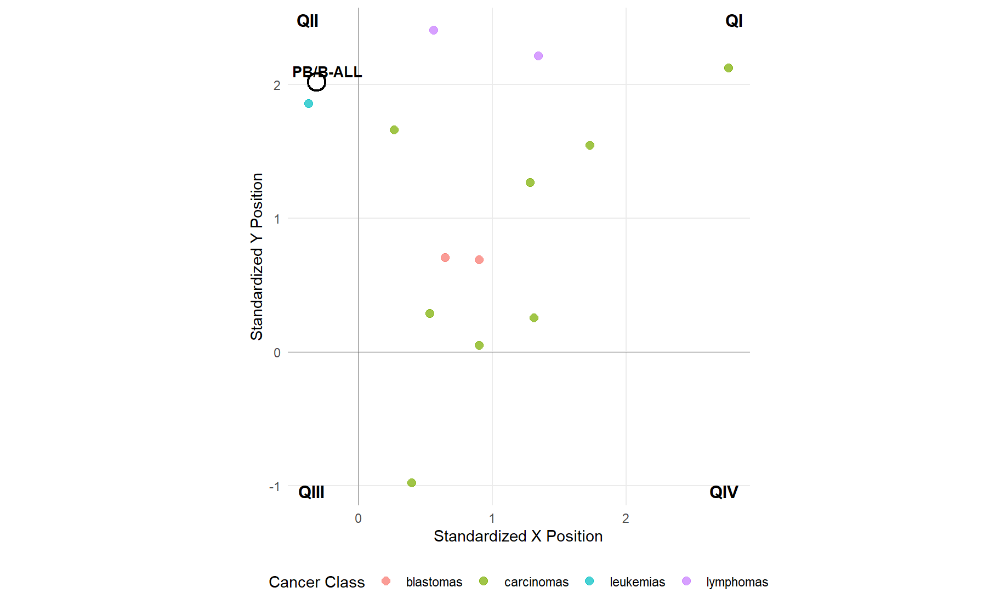
18.0.5 Assignment stability map
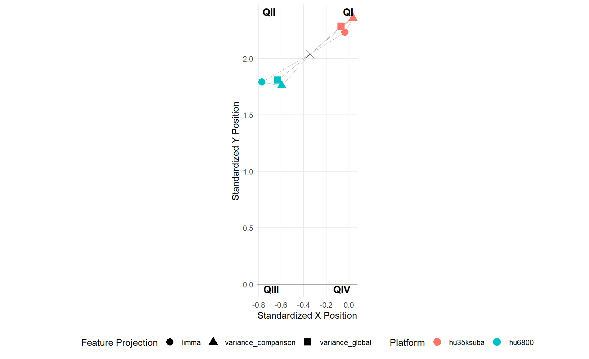
| Platform | Feature Projection | Perturbational State | Structural Interpretation | Assignment Confidence | X Descriptor | Y Descriptor | Std. X Position | Std. Y Position | Boundary Margin | Directional Agreement |
|---|---|---|---|---|---|---|---|---|---|---|
| hu35ksuba | limma | QII | entropy-dominant disorganization with reduced complexity | low | complexity__effrank_delta | mp__spectral_entropy_delta | -0.034 | 2.208 | 0.034 | 66.7% |
| hu35ksuba | variance_comparison | QI | coordinated structural expansion | low | complexity__effrank_delta | mp__spectral_entropy_delta | 0.034 | 2.334 | 0.034 | 100.0% |
| hu35ksuba | variance_global | QI | coordinated structural expansion | low | complexity__effrank_delta | mp__spectral_entropy_delta | 0.034 | 2.334 | 0.034 | 100.0% |
| hu6800 | limma | QII | entropy-dominant disorganization with reduced complexity | moderate | complexity__effrank_delta | mp__spectral_entropy_delta | -0.759 | 1.771 | 0.759 | 66.7% |
| hu6800 | variance_comparison | QII | entropy-dominant disorganization with reduced complexity | moderate | complexity__effrank_delta | mp__spectral_entropy_delta | -0.586 | 1.739 | 0.586 | 66.7% |
| hu6800 | variance_global | QII | entropy-dominant disorganization with reduced complexity | moderate | complexity__effrank_delta | mp__spectral_entropy_delta | -0.586 | 1.739 | 0.586 | 66.7% |
| Comparison | Assignments | Platforms | Feature Projections | Observed Quadrants | Modal Perturbational State | Modal Stability | Fully Stable | High-Confidence Share | Median Boundary Margin | Stability Class |
|---|---|---|---|---|---|---|---|---|---|---|
| PB/B-ALL | 6 | 2 | 3 | 2 | QII | 66.7% | No | 0.0% | 0.31 | unstable |
Reading guide. QI, QII, QIII, and QIV denote perturbational states in the standardized structural coordinate system. Std. X and Std. Y are report-level structural coordinates, not sample-level PCA axes. Boundary margin is the standardized distance from the nearest quadrant boundary; larger values indicate assignments farther from sign-transition boundaries. Directional agreement is the fraction of contributing structural engines supporting the same directional sign pattern. Modal stability is the fraction of platform/filter assignments occupying the dominant perturbational state.
| chip | filter_regime | complexity_direction | entropy_direction | mp_direction | latent_direction | n_direction_metrics_available | n_positive_direction_metrics | n_negative_direction_metrics | engine_sign_majority | engine_sign_agreement_fraction |
|---|---|---|---|---|---|---|---|---|---|---|
| hu35ksuba | limma | negative | negative | positive | NA | 3 | 1 | 2 | negative | 0.667 |
| hu35ksuba | variance_comparison | positive | positive | positive | NA | 3 | 3 | 0 | positive | 1.000 |
| hu35ksuba | variance_global | positive | positive | positive | NA | 3 | 3 | 0 | positive | 1.000 |
| hu6800 | limma | negative | negative | positive | NA | 3 | 1 | 2 | negative | 0.667 |
| hu6800 | variance_comparison | negative | negative | positive | NA | 3 | 1 | 2 | negative | 0.667 |
| hu6800 | variance_global | negative | negative | positive | NA | 3 | 1 | 2 | negative | 0.667 |
| chip | filter_regime | complexity_direction | entropy_direction | mp_direction | latent_direction | modal_direction | engine_sign_agreement_fraction | discordance_class | engine_coverage | discordance_archetype |
|---|---|---|---|---|---|---|---|---|---|---|
| hu35ksuba | limma | negative | negative | positive | NA | negative | 0.667 | major_discordance | three_engine_core_latent_unavailable | mp_divergence_from_classical_spectrum_latent_unavailable |
| hu35ksuba | variance_comparison | positive | positive | positive | NA | positive | 1.000 | full_agreement | three_engine_core_latent_unavailable | full_three_engine_core_agreement_latent_unavailable |
| hu35ksuba | variance_global | positive | positive | positive | NA | positive | 1.000 | full_agreement | three_engine_core_latent_unavailable | full_three_engine_core_agreement_latent_unavailable |
| hu6800 | limma | negative | negative | positive | NA | negative | 0.667 | major_discordance | three_engine_core_latent_unavailable | mp_divergence_from_classical_spectrum_latent_unavailable |
| hu6800 | variance_comparison | negative | negative | positive | NA | negative | 0.667 | major_discordance | three_engine_core_latent_unavailable | mp_divergence_from_classical_spectrum_latent_unavailable |
| hu6800 | variance_global | negative | negative | positive | NA | negative | 0.667 | major_discordance | three_engine_core_latent_unavailable | mp_divergence_from_classical_spectrum_latent_unavailable |
| comparison | n_assignments | modal_quadrant | modal_quadrant_fraction | mean_quadrant_margin | median_quadrant_margin | min_quadrant_margin | chip_instability_fraction | filter_instability_fraction | x_sign_flips | y_sign_flips | both_axis_flips | total_boundary_crossings | robustness_class | structural_confidence |
|---|---|---|---|---|---|---|---|---|---|---|---|---|---|---|
| PB/B-ALL | 6 | QI | 1 | 0.98 | 1.061 | 0.726 | 0 | 0 | 0 | 0 | 0 | 0 | stable_core_archetype | high |
| chip | filter_regime | robustness_quadrant | robustness_x | robustness_y | distance_to_x_axis | distance_to_y_axis | distance_to_origin | quadrant_margin | x_sign | y_sign |
|---|---|---|---|---|---|---|---|---|---|---|
| hu35ksuba | limma | QI | 0.942 | 0.726 | 0.726 | 0.942 | 1.190 | 0.726 | + | + |
| hu35ksuba | variance_comparison | QI | 1.131 | 1.061 | 1.061 | 1.131 | 1.551 | 1.061 | + | + |
| hu35ksuba | variance_global | QI | 1.131 | 1.061 | 1.061 | 1.131 | 1.551 | 1.061 | + | + |
| hu6800 | limma | QI | 1.119 | 0.789 | 0.789 | 1.119 | 1.369 | 0.789 | + | + |
| hu6800 | variance_comparison | QI | 1.712 | 1.122 | 1.122 | 1.712 | 2.047 | 1.122 | + | + |
| hu6800 | variance_global | QI | 1.712 | 1.122 | 1.122 | 1.712 | 2.047 | 1.122 | + | + |
18.0.6 PB/B-ALL: GO Semantic Metadata
The GO semantic layer summarizes functional annotation landscapes projected onto transcriptomic structural geometry. These tables group GO BP and GO MF terms into semantic blocks; they should be read as annotation topology, not as direct mechanistic inference.
18.0.6.1 GO semantic coverage
| gene_set_mode | n_context_rows | n_semantic_blocks | n_terms | n_sig_complexity | n_sig_entropy_spectral | median_shared_probes |
|---|---|---|---|---|---|---|
| GO_BP | 2651 | 334 | 3839 | 206 | 1486 | 8.000 |
| GO_MF | 1012 | 48 | 1412 | 73 | 638 | 10.000 |
18.0.6.2 GO semantic panels
Semantic context summary
| n_semantic_blocks | n_terms | n_sig_complexity | n_sig_entropy_spectral | median_shared_probes |
|---|---|---|---|---|
| 202 | 472 | 22 | 147 | 7.500 |
18.0.6.2.1 Dominant GO semantic blocks
| semantic_block_name | n_terms | n_sig_complexity | n_sig_entropy_spectral | total_sig | mean_shared_probes |
|---|---|---|---|---|---|
| mesenchyme development | 2 | 1 | 2 | 3 | 9.000 |
| cell surface receptor signaling pathway | 5 | 0 | 3 | 3 | 10.000 |
| negative regulation of intracellular signal transduction | 3 | 1 | 1 | 2 | 9.333 |
| regulation of intracellular signal transduction | 3 | 1 | 1 | 2 | 6.333 |
| positive regulation of intracellular signal transduction | 2 | 1 | 1 | 2 | 7.500 |
| cellular response to chemical stimulus | 1 | 1 | 1 | 2 | 9.000 |
| heart morphogenesis | 1 | 1 | 1 | 2 | 7.000 |
| microtubule cytoskeleton organization | 1 | 1 | 1 | 2 | 6.000 |
| positive regulation of catabolic process | 1 | 1 | 1 | 2 | 6.000 |
| regulation of apoptotic process | 1 | 1 | 1 | 2 | 23.000 |
| reproductive process | 1 | 1 | 1 | 2 | 5.000 |
| positive regulation of cytokine production | 5 | 0 | 2 | 2 | 6.000 |
| positive regulation of RNA metabolic process | 4 | 0 | 2 | 2 | 50.250 |
| protein catabolic process | 4 | 0 | 2 | 2 | 19.250 |
| protein modification by small protein conjugation or removal | 4 | 0 | 2 | 2 | 26.500 |
| protein-containing complex assembly | 4 | 0 | 2 | 2 | 8.000 |
| cellular response to stress | 3 | 0 | 2 | 2 | 7.333 |
| proteolysis | 3 | 0 | 2 | 2 | 15.333 |
| regulation of biological quality | 3 | 0 | 2 | 2 | 15.333 |
| cellular response to growth factor stimulus | 2 | 0 | 2 | 2 | 6.000 |
Semantic context summary
| n_semantic_blocks | n_terms | n_sig_complexity | n_sig_entropy_spectral | median_shared_probes |
|---|---|---|---|---|
| 36 | 188 | 11 | 78 | 9.750 |
18.0.6.2.2 Dominant GO semantic blocks
| semantic_block_name | n_terms | n_sig_complexity | n_sig_entropy_spectral | total_sig | mean_shared_probes |
|---|---|---|---|---|---|
| enzyme binding | 3 | 0 | 3 | 3 | 20.667 |
| protein binding | 2 | 1 | 1 | 2 | 29.500 |
| enzyme regulator activity | 1 | 1 | 1 | 2 | 5.000 |
| protein binding | 1 | 1 | 1 | 2 | 13.000 |
| protein-macromolecule adaptor activity | 1 | 1 | 1 | 2 | 5.000 |
| protein-macromolecule adaptor activity | 1 | 1 | 1 | 2 | 16.000 |
| DNA binding | 3 | 0 | 2 | 2 | 64.667 |
| RNA binding | 3 | 0 | 2 | 2 | 68.667 |
| cation binding | 3 | 0 | 2 | 2 | 113.333 |
| carbohydrate derivative binding | 2 | 0 | 2 | 2 | 66.500 |
| enzyme binding | 2 | 0 | 2 | 2 | 6.000 |
| molecular_function | 2 | 0 | 2 | 2 | 56.000 |
| protein binding | 2 | 0 | 2 | 2 | 520.000 |
| protein binding | 2 | 0 | 2 | 2 | 96.500 |
| protein kinase activity | 2 | 0 | 2 | 2 | 28.000 |
| RNA binding | 1 | 1 | 0 | 1 | 5.000 |
| lipid binding | 1 | 1 | 0 | 1 | 5.000 |
| monoatomic cation channel activity | 1 | 1 | 0 | 1 | 6.000 |
| protein binding | 1 | 1 | 0 | 1 | 9.000 |
| protein-macromolecule adaptor activity | 1 | 1 | 0 | 1 | 5.000 |
Semantic context summary
| n_semantic_blocks | n_terms | n_sig_complexity | n_sig_entropy_spectral | median_shared_probes |
|---|---|---|---|---|
| 291 | 1083 | 50 | 148 | 8.000 |
18.0.6.2.3 Dominant GO semantic blocks
| semantic_block_name | n_terms | n_sig_complexity | n_sig_entropy_spectral | total_sig | mean_shared_probes |
|---|---|---|---|---|---|
| protein phosphorylation | 5 | 1 | 2 | 3 | 20.000 |
| response to other organism | 3 | 0 | 3 | 3 | 12.333 |
| regulation of intracellular signal transduction | 8 | 1 | 1 | 2 | 7.375 |
| negative regulation of multicellular organismal process | 7 | 1 | 1 | 2 | 7.571 |
| intracellular signal transduction | 6 | 1 | 1 | 2 | 25.167 |
| positive regulation of intracellular signal transduction | 6 | 1 | 1 | 2 | 22.333 |
| cell surface receptor protein tyrosine kinase signaling pathway | 3 | 1 | 1 | 2 | 11.333 |
| mesenchyme development | 3 | 1 | 1 | 2 | 12.000 |
| response to nitrogen compound | 2 | 1 | 1 | 2 | 5.000 |
| biological_process | 1 | 1 | 1 | 2 | 9.000 |
| cellular response to hormone stimulus | 1 | 1 | 1 | 2 | 8.000 |
| cellular response to stress | 1 | 1 | 1 | 2 | 5.000 |
| chromosome organization | 1 | 1 | 1 | 2 | 5.000 |
| macroautophagy | 1 | 1 | 1 | 2 | 7.000 |
| regulation of biological quality | 1 | 1 | 1 | 2 | 7.000 |
| regulation of secretion by cell | 1 | 1 | 1 | 2 | 6.000 |
| ribonucleoprotein complex biogenesis | 1 | 1 | 1 | 2 | 5.000 |
| positive regulation of RNA metabolic process | 7 | 0 | 2 | 2 | 60.857 |
| positive regulation of cytokine production | 7 | 0 | 2 | 2 | 8.571 |
| positive regulation of cytokine production | 3 | 0 | 2 | 2 | 8.667 |
Semantic context summary
| n_semantic_blocks | n_terms | n_sig_complexity | n_sig_entropy_spectral | median_shared_probes |
|---|---|---|---|---|
| 43 | 375 | 17 | 61 | 10.000 |
18.0.6.2.4 Dominant GO semantic blocks
| semantic_block_name | n_terms | n_sig_complexity | n_sig_entropy_spectral | total_sig | mean_shared_probes |
|---|---|---|---|---|---|
| enzyme binding | 5 | 0 | 3 | 3 | 26.800 |
| transcription factor binding | 4 | 1 | 1 | 2 | 7.750 |
| hydrolase activity | 2 | 1 | 1 | 2 | 8.500 |
| metal ion transmembrane transporter activity | 2 | 1 | 1 | 2 | 5.000 |
| cytoskeletal protein binding | 1 | 1 | 1 | 2 | 14.000 |
| molecular_function | 1 | 1 | 1 | 2 | 7.000 |
| molecular_function | 1 | 1 | 1 | 2 | 6.000 |
| protein binding | 1 | 1 | 1 | 2 | 8.000 |
| heterocyclic compound binding | 3 | 0 | 2 | 2 | 121.333 |
| catalytic activity | 2 | 0 | 2 | 2 | 38.000 |
| lipid binding | 2 | 0 | 2 | 2 | 13.000 |
| cytoskeletal protein binding | 3 | 1 | 0 | 1 | 21.667 |
| DNA binding | 2 | 1 | 0 | 1 | 34.500 |
| RNA binding | 2 | 1 | 0 | 1 | 45.500 |
| transferase activity | 2 | 1 | 0 | 1 | 16.500 |
| acyltransferase activity | 1 | 1 | 0 | 1 | 11.000 |
| enzyme regulator activity | 1 | 1 | 0 | 1 | 6.000 |
| oxidoreductase activity | 1 | 1 | 0 | 1 | 6.000 |
| protein kinase activity | 1 | 1 | 0 | 1 | 5.000 |
| protein-macromolecule adaptor activity | 1 | 1 | 0 | 1 | 7.000 |
Semantic context summary
| n_semantic_blocks | n_terms | n_sig_complexity | n_sig_entropy_spectral | median_shared_probes |
|---|---|---|---|---|
| 246 | 736 | 50 | 427 | 8.000 |
18.0.6.2.5 Dominant GO semantic blocks
| semantic_block_name | n_terms | n_sig_complexity | n_sig_entropy_spectral | total_sig | mean_shared_probes |
|---|---|---|---|---|---|
| positive regulation of cytokine production | 8 | 1 | 7 | 8 | 10.500 |
| G protein-coupled receptor signaling pathway | 7 | 1 | 7 | 8 | 17.714 |
| intracellular signal transduction | 5 | 1 | 4 | 5 | 20.200 |
| DNA-templated transcription | 4 | 1 | 3 | 4 | 12.500 |
| apoptotic signaling pathway | 4 | 1 | 3 | 4 | 6.750 |
| negative regulation of intracellular signal transduction | 4 | 1 | 3 | 4 | 7.750 |
| regulation of anatomical structure morphogenesis | 3 | 1 | 3 | 4 | 16.000 |
| cell surface receptor signaling pathway | 5 | 0 | 4 | 4 | 19.200 |
| positive regulation of RNA metabolic process | 5 | 0 | 4 | 4 | 55.200 |
| cell surface receptor protein tyrosine kinase signaling pathway | 4 | 0 | 4 | 4 | 7.500 |
| blood vessel morphogenesis | 2 | 2 | 1 | 3 | 21.000 |
| cellular response to nitrogen compound | 3 | 1 | 2 | 3 | 9.333 |
| cell adhesion | 2 | 1 | 2 | 3 | 42.000 |
| chemotaxis | 2 | 1 | 2 | 3 | 16.500 |
| positive regulation of cell population proliferation | 2 | 1 | 2 | 3 | 8.500 |
| protein catabolic process | 2 | 1 | 2 | 3 | 18.000 |
| proteolysis | 2 | 1 | 2 | 3 | 28.500 |
| cellular response to growth factor stimulus | 4 | 0 | 3 | 3 | 8.250 |
| cellular response to chemical stimulus | 3 | 0 | 3 | 3 | 8.667 |
| cytokine-mediated signaling pathway | 3 | 0 | 3 | 3 | 14.333 |
Semantic context summary
| n_semantic_blocks | n_terms | n_sig_complexity | n_sig_entropy_spectral | median_shared_probes |
|---|---|---|---|---|
| 43 | 301 | 17 | 196 | 9.750 |
18.0.6.2.6 Dominant GO semantic blocks
| semantic_block_name | n_terms | n_sig_complexity | n_sig_entropy_spectral | total_sig | mean_shared_probes |
|---|---|---|---|---|---|
| peptidase activity | 4 | 2 | 4 | 6 | 21.250 |
| enzyme regulator activity | 4 | 1 | 4 | 5 | 9.000 |
| enzyme binding | 4 | 1 | 3 | 4 | 25.000 |
| DNA binding | 5 | 1 | 2 | 3 | 22.600 |
| enzyme binding | 2 | 1 | 2 | 3 | 23.500 |
| hydrolase activity | 2 | 1 | 2 | 3 | 9.500 |
| protein binding | 2 | 1 | 2 | 3 | 8.500 |
| small molecule binding | 2 | 1 | 2 | 3 | 8.000 |
| RNA binding | 4 | 0 | 3 | 3 | 57.750 |
| protein kinase activity | 4 | 0 | 3 | 3 | 25.500 |
| RNA binding | 3 | 0 | 3 | 3 | 14.000 |
| cation binding | 3 | 0 | 3 | 3 | 122.000 |
| heterocyclic compound binding | 3 | 0 | 3 | 3 | 79.333 |
| phosphoric ester hydrolase activity | 3 | 0 | 3 | 3 | 11.333 |
| hydrolase activity | 1 | 1 | 1 | 2 | 170.000 |
| oxidoreductase activity | 1 | 1 | 1 | 2 | 11.000 |
| protein binding | 1 | 1 | 1 | 2 | 9.000 |
| protein binding | 1 | 1 | 1 | 2 | 5.000 |
| signaling receptor activity | 1 | 1 | 1 | 2 | 36.000 |
| molecular function regulator activity | 5 | 0 | 2 | 2 | 14.600 |
Semantic context summary
| n_semantic_blocks | n_terms | n_sig_complexity | n_sig_entropy_spectral | median_shared_probes |
|---|---|---|---|---|
| 320 | 1548 | 84 | 764 | 9.000 |
18.0.6.2.7 Dominant GO semantic blocks
| semantic_block_name | n_terms | n_sig_complexity | n_sig_entropy_spectral | total_sig | mean_shared_probes |
|---|---|---|---|---|---|
| positive regulation of cytokine production | 12 | 2 | 12 | 14 | 18.500 |
| positive regulation of intracellular signal transduction | 8 | 1 | 7 | 8 | 25.250 |
| G protein-coupled receptor signaling pathway | 8 | 2 | 5 | 7 | 28.375 |
| cytokine-mediated signaling pathway | 9 | 0 | 7 | 7 | 11.000 |
| positive regulation of protein metabolic process | 3 | 3 | 3 | 6 | 12.667 |
| regulation of intracellular signal transduction | 6 | 1 | 5 | 6 | 8.667 |
| cell surface receptor signaling pathway | 9 | 2 | 3 | 5 | 20.667 |
| myeloid cell differentiation | 5 | 0 | 5 | 5 | 9.000 |
| protein modification by small protein conjugation or removal | 5 | 0 | 5 | 5 | 22.200 |
| negative regulation of multicellular organismal process | 6 | 1 | 3 | 4 | 10.667 |
| intracellular signal transduction | 4 | 1 | 3 | 4 | 16.000 |
| cellular response to cytokine stimulus | 3 | 1 | 3 | 4 | 17.000 |
| localization within membrane | 3 | 1 | 3 | 4 | 14.333 |
| positive regulation of cytokine production | 3 | 1 | 3 | 4 | 13.000 |
| DNA repair | 7 | 0 | 4 | 4 | 27.429 |
| cell surface receptor protein tyrosine kinase signaling pathway | 5 | 0 | 4 | 4 | 15.200 |
| negative regulation of intracellular signal transduction | 5 | 0 | 4 | 4 | 12.200 |
| alcohol metabolic process | 4 | 0 | 4 | 4 | 11.750 |
| cellular response to growth factor stimulus | 4 | 0 | 4 | 4 | 14.000 |
| mRNA catabolic process | 4 | 0 | 4 | 4 | 10.750 |
Semantic context summary
| n_semantic_blocks | n_terms | n_sig_complexity | n_sig_entropy_spectral | median_shared_probes |
|---|---|---|---|---|
| 48 | 548 | 28 | 303 | 10.000 |
18.0.6.2.8 Dominant GO semantic blocks
| semantic_block_name | n_terms | n_sig_complexity | n_sig_entropy_spectral | total_sig | mean_shared_probes |
|---|---|---|---|---|---|
| RNA binding | 8 | 1 | 5 | 6 | 66.500 |
| enzyme regulator activity | 7 | 1 | 5 | 6 | 13.714 |
| molecular function regulator activity | 6 | 0 | 5 | 5 | 28.667 |
| protein kinase activity | 5 | 0 | 5 | 5 | 42.400 |
| peptidase activity | 2 | 2 | 2 | 4 | 28.000 |
| transcription factor binding | 4 | 1 | 3 | 4 | 19.000 |
| heterocyclic compound binding | 3 | 1 | 3 | 4 | 152.667 |
| protein serine/threonine kinase activity | 6 | 0 | 4 | 4 | 23.333 |
| enzyme binding | 5 | 0 | 4 | 4 | 40.400 |
| phosphoric ester hydrolase activity | 5 | 0 | 4 | 4 | 18.200 |
| peptidase activity | 4 | 0 | 4 | 4 | 44.500 |
| carbohydrate derivative binding | 3 | 2 | 1 | 3 | 5.667 |
| enzyme binding | 3 | 2 | 1 | 3 | 14.333 |
| molecular_function | 2 | 1 | 2 | 3 | 14.500 |
| protein-containing complex binding | 2 | 1 | 2 | 3 | 72.000 |
| DNA binding | 4 | 0 | 3 | 3 | 123.250 |
| RNA binding | 3 | 0 | 3 | 3 | 32.667 |
| cation binding | 3 | 0 | 3 | 3 | 250.333 |
| protein binding | 3 | 0 | 3 | 3 | 17.000 |
| small molecule binding | 3 | 0 | 3 | 3 | 12.667 |
This section embeds the biological structural-overlay module. Chips are treated as distinct observational systems, and filter regimes are treated as feature-space perturbations rather than pooled preprocessing settings.
18.0.7 PB/B-ALL: Biological Gene-Set Structural Report
This report is exploratory and downstream of the structural-inference framework. It summarizes GO, KEGG, and MSigDB/Hallmark gene-set results associated with a single normal–tumor comparison. Biological terms are interpreted as annotations of structurally characterized tumor states, not as the primary evidentiary basis of the framework.
18.0.7.1 Report coverage
| comparison | alpha | enabled_gene_set_modes | n_biological_rows | n_skipped_chip_mode_gene_sets |
|---|---|---|---|---|
| PB/B-ALL | 0.05 | GO_BP, GO_MF, KEGG, MSIGDB | 10990 | 15166 |
18.0.7.2 Context inventory
| comparison | chip | filter_regime | gene_set_mode | engine | n_terms | n_gene_sets | n_significant_complexity | n_significant_entropy_spectral | median_shared_probes |
|---|---|---|---|---|---|---|---|---|---|
| PB/B-ALL | hu35ksuba | limma | GO_BP | complexity | 472 | 472 | 22 | 0 | 7 |
| PB/B-ALL | hu35ksuba | limma | GO_BP | entropy | 472 | 472 | 0 | 147 | 7 |
| PB/B-ALL | hu35ksuba | limma | GO_MF | complexity | 188 | 188 | 11 | 0 | 9 |
| PB/B-ALL | hu35ksuba | limma | GO_MF | entropy | 188 | 188 | 0 | 78 | 9 |
| PB/B-ALL | hu35ksuba | limma | KEGG | complexity | 25 | 25 | 2 | 0 | 13 |
| PB/B-ALL | hu35ksuba | limma | KEGG | entropy | 25 | 25 | 0 | 6 | 13 |
| PB/B-ALL | hu35ksuba | limma | MSIGDB | complexity | 13 | 13 | 0 | 0 | 20 |
| PB/B-ALL | hu35ksuba | limma | MSIGDB | entropy | 13 | 13 | 0 | 4 | 20 |
| PB/B-ALL | hu35ksuba | variance_top3000 | GO_BP | complexity | 1083 | 1083 | 50 | 0 | 8 |
| PB/B-ALL | hu35ksuba | variance_top3000 | GO_BP | entropy | 1083 | 1083 | 0 | 148 | 8 |
| PB/B-ALL | hu35ksuba | variance_top3000 | GO_MF | complexity | 375 | 375 | 17 | 0 | 10 |
| PB/B-ALL | hu35ksuba | variance_top3000 | GO_MF | entropy | 375 | 375 | 0 | 61 | 10 |
| PB/B-ALL | hu35ksuba | variance_top3000 | KEGG | complexity | 54 | 54 | 0 | 0 | 22 |
| PB/B-ALL | hu35ksuba | variance_top3000 | KEGG | entropy | 54 | 54 | 0 | 4 | 22 |
| PB/B-ALL | hu35ksuba | variance_top3000 | MSIGDB | complexity | 13 | 13 | 0 | 0 | 50 |
| PB/B-ALL | hu35ksuba | variance_top3000 | MSIGDB | entropy | 13 | 13 | 0 | 5 | 50 |
| PB/B-ALL | hu6800 | limma | GO_BP | complexity | 736 | 736 | 50 | 0 | 8 |
| PB/B-ALL | hu6800 | limma | GO_BP | entropy | 736 | 736 | 0 | 427 | 8 |
| PB/B-ALL | hu6800 | limma | GO_MF | complexity | 301 | 301 | 17 | 0 | 10 |
| PB/B-ALL | hu6800 | limma | GO_MF | entropy | 301 | 301 | 0 | 196 | 10 |
| PB/B-ALL | hu6800 | limma | KEGG | complexity | 56 | 56 | 7 | 0 | 21 |
| PB/B-ALL | hu6800 | limma | KEGG | entropy | 56 | 56 | 0 | 44 | 21 |
| PB/B-ALL | hu6800 | limma | MSIGDB | complexity | 13 | 13 | 3 | 0 | 41 |
| PB/B-ALL | hu6800 | limma | MSIGDB | entropy | 13 | 13 | 0 | 13 | 41 |
| PB/B-ALL | hu6800 | variance_top3000 | GO_BP | complexity | 1548 | 1548 | 84 | 0 | 9 |
| PB/B-ALL | hu6800 | variance_top3000 | GO_BP | entropy | 1548 | 1548 | 0 | 764 | 9 |
| PB/B-ALL | hu6800 | variance_top3000 | GO_MF | complexity | 548 | 548 | 28 | 0 | 10 |
| PB/B-ALL | hu6800 | variance_top3000 | GO_MF | entropy | 548 | 548 | 0 | 303 | 10 |
| PB/B-ALL | hu6800 | variance_top3000 | KEGG | complexity | 57 | 57 | 2 | 0 | 46 |
| PB/B-ALL | hu6800 | variance_top3000 | KEGG | entropy | 57 | 57 | 0 | 51 | 46 |
| PB/B-ALL | hu6800 | variance_top3000 | MSIGDB | complexity | 13 | 13 | 1 | 0 | 85 |
| PB/B-ALL | hu6800 | variance_top3000 | MSIGDB | entropy | 13 | 13 | 0 | 13 | 85 |
18.0.7.3 Biological result panels
The panels below intentionally separate chips and filtering regimes. Chips are treated as distinct observational systems, and filter regimes are treated as feature-space perturbations rather than interchangeable preprocessing settings.
Context summary
| engine | n_rows | n_gene_sets | n_significant_complexity | n_significant_entropy_spectral | median_shared_probes |
|---|---|---|---|---|---|
| complexity | 472 | 472 | 22 | 0 | 7.000 |
| entropy | 472 | 472 | 0 | 147 | 7.000 |
18.0.7.3.1 Complexity signal plot
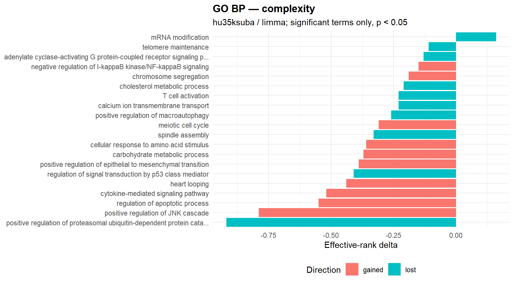
18.0.7.3.2 Entropy signal plot
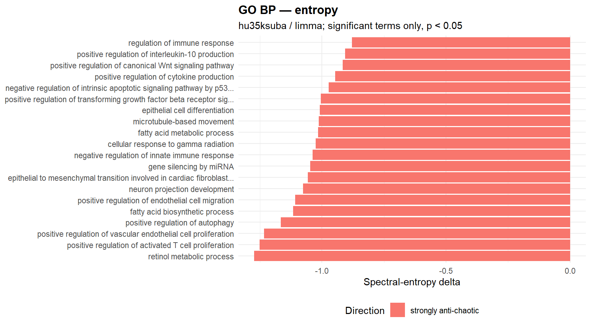
18.0.7.3.3 Significant complexity terms
| gene_set | semantic_block | n_shared_probes | effrank_delta | kappa_delta | direction | p_perm | status |
|---|---|---|---|---|---|---|---|
| cytokine-mediated signaling pathway | cytokine-mediated signaling pathway | 9 | -0.520 | 4375.620 | gained | <0.001 | ok |
| T cell activation | T cell activation | 5 | -0.230 | -513.780 | lost | <0.001 | ok |
| mRNA modification | mRNA metabolic process | 5 | 0.160 | -1153.240 | lost | <0.001 | ok |
| adenylate cyclase-activating G protein-coupled receptor signaling pathway | G protein-coupled receptor signaling pathway | 5 | -0.130 | -604.980 | lost | <0.001 | ok |
| telomere maintenance | chromosome organization | 6 | -0.110 | -3374.890 | lost | <0.001 | ok |
| positive regulation of proteasomal ubiquitin-dependent protein catabolic process | positive regulation of catabolic process | 6 | -0.920 | -1319.990 | lost | 0.010 | ok |
| heart looping | heart morphogenesis | 7 | -0.440 | 10092.080 | gained | 0.010 | ok |
| cellular response to interferon-gamma | cellular response to cytokine stimulus | 8 | 0.010 | 47716.690 | gained | 0.010 | ok |
| meiotic cell cycle | reproductive process | 5 | -0.310 | 860.880 | gained | 0.020 | ok |
| chromosome segregation | cell cycle process | 14 | -0.190 | 257.440 | gained | 0.020 | ok |
| negative regulation of I-kappaB kinase/NF-kappaB signaling | negative regulation of intracellular signal transduction | 17 | -0.150 | 158.980 | gained | 0.020 | ok |
| positive regulation of JNK cascade | positive regulation of intracellular signal transduction | 9 | -0.790 | 1304.960 | gained | 0.030 | ok |
| regulation of signal transduction by p53 class mediator | regulation of intracellular signal transduction | 6 | -0.410 | -1236.750 | lost | 0.030 | ok |
| positive regulation of epithelial to mesenchymal transition | mesenchyme development | 13 | -0.390 | 216.610 | gained | 0.030 | ok |
| carbohydrate metabolic process | carbohydrate metabolic process | 12 | -0.370 | 320.710 | gained | 0.030 | ok |
| positive regulation of macroautophagy | macroautophagy | 5 | -0.260 | -356.250 | lost | 0.030 | ok |
| membrane organization | membrane organization | 5 | -0.070 | 479.160 | gained | 0.030 | ok |
| regulation of apoptotic process | regulation of apoptotic process | 23 | -0.550 | 125.710 | gained | 0.040 | ok |
| cellular response to amino acid stimulus | cellular response to chemical stimulus | 9 | -0.360 | 1316.480 | gained | 0.040 | ok |
| spindle assembly | microtubule cytoskeleton organization | 6 | -0.330 | -681.930 | lost | 0.040 | ok |
18.0.7.3.4 Significant entropy terms
| gene_set | semantic_block | n_shared_probes | spectral_delta | shannon_delta | spectral_direction | p_perm_spectral | p_perm_shannon | status |
|---|---|---|---|---|---|---|---|---|
| retinol metabolic process | alcohol metabolic process | 6 | -1.273 | 0.195 | strongly anti-chaotic | <0.001 | NA | ok |
| positive regulation of activated T cell proliferation | positive regulation of cell-cell adhesion | 6 | -1.251 | 0.182 | strongly anti-chaotic | <0.001 | NA | ok |
| positive regulation of vascular endothelial cell proliferation | positive regulation of cell population proliferation | 7 | -1.234 | 0.184 | strongly anti-chaotic | <0.001 | NA | ok |
| positive regulation of autophagy | positive regulation of catabolic process | 7 | -1.166 | 0.182 | strongly anti-chaotic | <0.001 | NA | ok |
| neuron projection development | neuron projection development | 8 | -1.076 | 0.191 | strongly anti-chaotic | <0.001 | NA | ok |
| epithelial to mesenchymal transition involved in cardiac fibroblast development | mesenchyme development | 5 | -1.057 | 0.193 | strongly anti-chaotic | <0.001 | NA | ok |
| gene silencing by miRNA | post-transcriptional regulation of gene expression | 5 | -1.047 | 0.193 | strongly anti-chaotic | <0.001 | NA | ok |
| negative regulation of innate immune response | negative regulation of response to external stimulus | 6 | -1.038 | 0.190 | strongly anti-chaotic | <0.001 | NA | ok |
| epithelial cell differentiation | epithelial cell differentiation | 6 | -1.009 | 0.192 | strongly anti-chaotic | <0.001 | NA | ok |
| positive regulation of transforming growth factor beta receptor signaling pathway | cellular response to growth factor stimulus | 7 | -1.005 | 0.192 | strongly anti-chaotic | <0.001 | NA | ok |
| positive regulation of canonical Wnt signaling pathway | positive regulation of signal transduction | 7 | -0.917 | 0.182 | strongly anti-chaotic | <0.001 | NA | ok |
| positive regulation of interleukin-10 production | positive regulation of cytokine production | 5 | -0.907 | 0.179 | strongly anti-chaotic | <0.001 | NA | ok |
| positive regulation of proteasomal ubiquitin-dependent protein catabolic process | positive regulation of catabolic process | 6 | -0.841 | 0.186 | strongly anti-chaotic | <0.001 | NA | ok |
| positive regulation of keratinocyte proliferation | positive regulation of cell population proliferation | 6 | -0.790 | 0.194 | strongly anti-chaotic | <0.001 | NA | ok |
| regulation of cytokinesis | regulation of cell cycle process | 6 | -0.695 | 0.189 | strongly anti-chaotic | <0.001 | NA | ok |
| negative regulation of protein-containing complex assembly | negative regulation of cellular component organization | 6 | -0.688 | 0.185 | strongly anti-chaotic | <0.001 | NA | ok |
| cellular response to hypoxia | response to abiotic stimulus | 13 | -0.662 | 0.197 | strongly anti-chaotic | <0.001 | NA | ok |
| regulation of multicellular organismal development | regulation of multicellular organismal development | 5 | -0.655 | 0.189 | strongly anti-chaotic | <0.001 | NA | ok |
| glucose homeostasis | chemical homeostasis | 9 | -0.651 | 0.189 | strongly anti-chaotic | <0.001 | NA | ok |
| receptor signaling pathway via JAK-STAT | cell surface receptor signaling pathway | 8 | -0.647 | 0.194 | strongly anti-chaotic | <0.001 | NA | ok |
18.0.7.3.5 Terms significant in both engines
| gene_set | semantic_block | n_shared_probes | complexity_effrank_delta | complexity_direction | complexity_p_perm | entropy_spectral_delta | entropy_spectral_direction | entropy_p_perm_spectral | joint_rank_score |
|---|---|---|---|---|---|---|---|---|---|
| positive regulation of proteasomal ubiquitin-dependent protein catabolic process | positive regulation of catabolic process | 6 | -0.920 | lost | 0.010 | -0.841 | strongly anti-chaotic | <0.001 | 309.653 |
| meiotic cell cycle | reproductive process | 5 | -0.310 | gained | 0.020 | -0.362 | mildly anti-chaotic | <0.001 | 309.352 |
| regulation of apoptotic process | regulation of apoptotic process | 23 | -0.550 | gained | 0.040 | -0.479 | mildly anti-chaotic | <0.001 | 309.051 |
| heart looping | heart morphogenesis | 7 | -0.440 | gained | 0.010 | -0.441 | mildly anti-chaotic | 0.010 | 4.000 |
| regulation of signal transduction by p53 class mediator | regulation of intracellular signal transduction | 6 | -0.410 | lost | 0.030 | -0.443 | mildly anti-chaotic | 0.010 | 3.523 |
| cellular response to amino acid stimulus | cellular response to chemical stimulus | 9 | -0.360 | gained | 0.040 | -0.377 | mildly anti-chaotic | 0.010 | 3.398 |
| positive regulation of epithelial to mesenchymal transition | mesenchyme development | 13 | -0.390 | gained | 0.030 | -0.341 | mildly anti-chaotic | 0.040 | 2.921 |
| positive regulation of JNK cascade | positive regulation of intracellular signal transduction | 9 | -0.790 | gained | 0.030 | -0.661 | strongly anti-chaotic | 0.040 | 2.921 |
| spindle assembly | microtubule cytoskeleton organization | 6 | -0.330 | lost | 0.040 | -0.344 | mildly anti-chaotic | 0.030 | 2.921 |
18.0.7.3.6 GO semantic clusters
| semantic_cluster_id | semantic_block_name | n_rows | n_terms | n_sig_complexity | n_sig_entropy_spectral | mean_shared_probes |
|---|---|---|---|---|---|---|
| BP_GO_0007166_1 | cell surface receptor signaling pathway | 10 | 5 | 0 | 3 | 10.000 |
| BP_GO_0060485_6 | mesenchyme development | 4 | 2 | 1 | 2 | 9.000 |
| BP_GO_0001819_1 | positive regulation of cytokine production | 10 | 5 | 0 | 2 | 6.000 |
| BP_GO_0030163_2 | protein catabolic process | 8 | 4 | 0 | 2 | 19.250 |
| BP_GO_0051254_1 | positive regulation of RNA metabolic process | 8 | 4 | 0 | 2 | 50.250 |
| BP_GO_0065003_7 | protein-containing complex assembly | 8 | 4 | 0 | 2 | 8.000 |
| BP_GO_0070647_1 | protein modification by small protein conjugation or removal | 8 | 4 | 0 | 2 | 26.500 |
| BP_GO_0006508_1 | proteolysis | 6 | 3 | 0 | 2 | 15.333 |
| BP_GO_0033554_1 | cellular response to stress | 6 | 3 | 0 | 2 | 7.333 |
| BP_GO_0065008_2 | regulation of biological quality | 6 | 3 | 0 | 2 | 15.333 |
| BP_GO_1902531_1 | regulation of intracellular signal transduction | 6 | 3 | 1 | 1 | 6.333 |
| BP_GO_1902532_1 | negative regulation of intracellular signal transduction | 6 | 3 | 1 | 1 | 9.333 |
| BP_GO_0006897_2 | endocytosis | 4 | 2 | 0 | 2 | 12.500 |
| BP_GO_0051604_4 | protein maturation | 4 | 2 | 0 | 2 | 8.000 |
| BP_GO_0071363_1 | cellular response to growth factor stimulus | 4 | 2 | 0 | 2 | 6.000 |
| BP_GO_1902533_4 | positive regulation of intracellular signal transduction | 4 | 2 | 1 | 1 | 7.500 |
| BP_GO_0000226_2 | microtubule cytoskeleton organization | 2 | 1 | 1 | 1 | 6.000 |
| BP_GO_0003007_1 | heart morphogenesis | 2 | 1 | 1 | 1 | 7.000 |
| BP_GO_0009896_3 | positive regulation of catabolic process | 2 | 1 | 1 | 1 | 6.000 |
| BP_GO_0022414_15 | reproductive process | 2 | 1 | 1 | 1 | 5.000 |
Context summary
| engine | n_rows | n_gene_sets | n_significant_complexity | n_significant_entropy_spectral | median_shared_probes |
|---|---|---|---|---|---|
| complexity | 188 | 188 | 11 | 0 | 9.000 |
| entropy | 188 | 188 | 0 | 78 | 9.000 |
18.0.7.3.7 Complexity signal plot
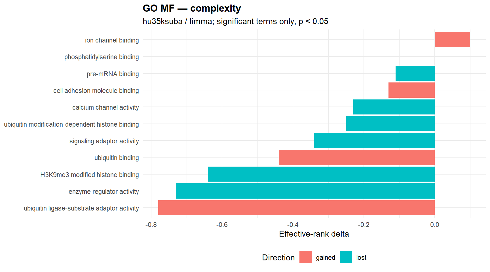
18.0.7.3.8 Entropy signal plot
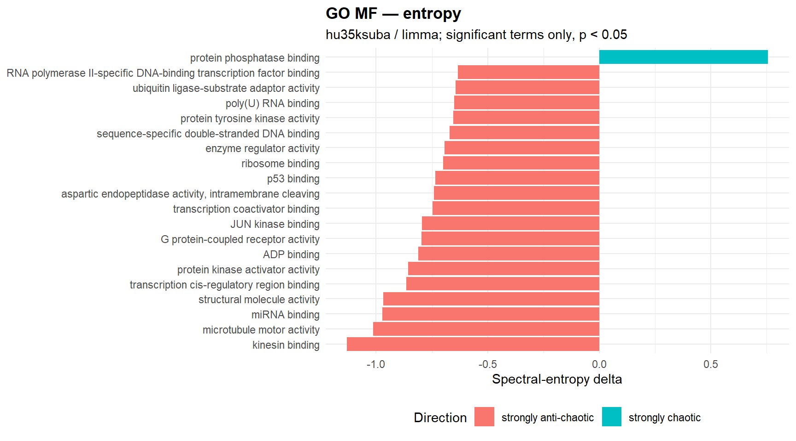
18.0.7.3.9 Significant complexity terms
| gene_set | semantic_block | n_shared_probes | effrank_delta | kappa_delta | direction | p_perm | status |
|---|---|---|---|---|---|---|---|
| signaling adaptor activity | protein-macromolecule adaptor activity | 5 | -0.340 | -619.730 | lost | <0.001 | ok |
| ubiquitin modification-dependent histone binding | protein-macromolecule adaptor activity | 5 | -0.250 | -412.420 | lost | <0.001 | ok |
| phosphatidylserine binding | lipid binding | 5 | 0.000 | 657.630 | gained | <0.001 | ok |
| ubiquitin ligase-substrate adaptor activity | protein-macromolecule adaptor activity | 16 | -0.780 | 139.260 | gained | 0.010 | ok |
| H3K9me3 modified histone binding | protein-macromolecule adaptor activity | 5 | -0.640 | -603.700 | lost | 0.010 | ok |
| cell adhesion molecule binding | protein binding | 9 | -0.130 | 2835.980 | gained | 0.010 | ok |
| enzyme regulator activity | enzyme regulator activity | 5 | -0.730 | -990.740 | lost | 0.020 | ok |
| pre-mRNA binding | RNA binding | 5 | -0.110 | -375.310 | lost | 0.030 | ok |
| ion channel binding | protein binding | 9 | 0.100 | 1458.680 | gained | 0.030 | ok |
| ubiquitin binding | protein binding | 13 | -0.440 | 182.570 | gained | 0.040 | ok |
| calcium channel activity | monoatomic cation channel activity | 6 | -0.230 | -866.880 | lost | 0.040 | ok |
18.0.7.3.10 Significant entropy terms
| gene_set | semantic_block | n_shared_probes | spectral_delta | shannon_delta | spectral_direction | p_perm_spectral | p_perm_shannon | status |
|---|---|---|---|---|---|---|---|---|
| kinesin binding | cytoskeletal protein binding | 11 | -1.131 | 0.193 | strongly anti-chaotic | <0.001 | NA | ok |
| miRNA binding | RNA binding | 11 | -0.972 | 0.183 | strongly anti-chaotic | <0.001 | NA | ok |
| ADP binding | carbohydrate derivative binding | 5 | -0.812 | 0.193 | strongly anti-chaotic | <0.001 | NA | ok |
| G protein-coupled receptor activity | transmembrane signaling receptor activity | 7 | -0.796 | 0.189 | strongly anti-chaotic | <0.001 | NA | ok |
| protein phosphatase binding | enzyme binding | 7 | 0.756 | 0.199 | strongly chaotic | <0.001 | NA | ok |
| isomerase activity | catalytic activity | 14 | -0.632 | 0.190 | strongly anti-chaotic | <0.001 | NA | ok |
| H3K9me3 modified histone binding | protein-macromolecule adaptor activity | 5 | -0.629 | 0.189 | strongly anti-chaotic | <0.001 | NA | ok |
| ATPase | hydrolase activity | 34 | -0.463 | 0.193 | mildly anti-chaotic | <0.001 | NA | ok |
| GO:0140767 | protein-macromolecule adaptor activity | 5 | -0.435 | 0.183 | mildly anti-chaotic | <0.001 | NA | ok |
| SNARE binding | protein binding | 5 | -0.374 | 0.197 | mildly anti-chaotic | <0.001 | NA | ok |
| iron ion binding | cation binding | 8 | -0.306 | 0.202 | mildly anti-chaotic | <0.001 | NA | ok |
| protein-containing complex binding | protein-containing complex binding | 22 | -0.299 | 0.197 | mildly anti-chaotic | <0.001 | NA | ok |
| unfolded protein binding | protein binding | 9 | -0.266 | 0.202 | mildly anti-chaotic | <0.001 | NA | ok |
| damaged DNA binding | DNA binding | 8 | 0.184 | 0.189 | mildly chaotic | <0.001 | NA | ok |
| microtubule motor activity | catalytic activity | 6 | -1.013 | 0.188 | strongly anti-chaotic | 0.010 | NA | ok |
| transcription cis-regulatory region binding | DNA binding | 26 | -0.865 | 0.193 | strongly anti-chaotic | 0.010 | NA | ok |
| protein kinase activator activity | enzyme regulator activity | 6 | -0.856 | 0.179 | strongly anti-chaotic | 0.010 | NA | ok |
| JUN kinase binding | enzyme binding | 5 | -0.794 | 0.184 | strongly anti-chaotic | 0.010 | NA | ok |
| transcription coactivator binding | transcription factor binding | 8 | -0.747 | 0.191 | strongly anti-chaotic | 0.010 | NA | ok |
| p53 binding | protein binding | 9 | -0.734 | 0.186 | strongly anti-chaotic | 0.010 | NA | ok |
18.0.7.3.11 Terms significant in both engines
| gene_set | semantic_block | n_shared_probes | complexity_effrank_delta | complexity_direction | complexity_p_perm | entropy_spectral_delta | entropy_spectral_direction | entropy_p_perm_spectral | joint_rank_score |
|---|---|---|---|---|---|---|---|---|---|
| H3K9me3 modified histone binding | protein-macromolecule adaptor activity | 5 | -0.640 | lost | 0.010 | -0.629 | strongly anti-chaotic | <0.001 | 309.653 |
| ubiquitin ligase-substrate adaptor activity | protein-macromolecule adaptor activity | 16 | -0.780 | gained | 0.010 | -0.643 | strongly anti-chaotic | 0.010 | 4.000 |
| enzyme regulator activity | enzyme regulator activity | 5 | -0.730 | lost | 0.020 | -0.693 | strongly anti-chaotic | 0.010 | 3.699 |
| ubiquitin binding | protein binding | 13 | -0.440 | gained | 0.040 | -0.348 | mildly anti-chaotic | 0.030 | 2.921 |
18.0.7.3.12 GO semantic clusters
| semantic_cluster_id | semantic_block_name | n_rows | n_terms | n_sig_complexity | n_sig_entropy_spectral | mean_shared_probes |
|---|---|---|---|---|---|---|
| MF_GO_0019899_3 | enzyme binding | 6 | 3 | 0 | 3 | 20.667 |
| MF_GO_0003677_5 | DNA binding | 6 | 3 | 0 | 2 | 64.667 |
| MF_GO_0003723_1 | RNA binding | 6 | 3 | 0 | 2 | 68.667 |
| MF_GO_0043169_1 | cation binding | 6 | 3 | 0 | 2 | 113.333 |
| MF_GO_0004672_1 | protein kinase activity | 4 | 2 | 0 | 2 | 28.000 |
| MF_GO_0005515_1 | protein binding | 4 | 2 | 0 | 2 | 520.000 |
| MF_GO_0005515_44 | protein binding | 4 | 2 | 0 | 2 | 96.500 |
| MF_GO_0005515_55 | protein binding | 4 | 2 | 1 | 1 | 29.500 |
| MF_GO_0019899_4 | enzyme binding | 4 | 2 | 0 | 2 | 6.000 |
| MF_GO_0097367_1 | carbohydrate derivative binding | 4 | 2 | 0 | 2 | 66.500 |
| MF_molecular_function_2 | molecular_function | 4 | 2 | 0 | 2 | 56.000 |
| MF_GO_0005515_33 | protein binding | 2 | 1 | 1 | 1 | 13.000 |
| MF_GO_0030234_17 | enzyme regulator activity | 2 | 1 | 1 | 1 | 5.000 |
| MF_GO_0030674_15 | protein-macromolecule adaptor activity | 2 | 1 | 1 | 1 | 16.000 |
| MF_GO_0030674_8 | protein-macromolecule adaptor activity | 2 | 1 | 1 | 1 | 5.000 |
| MF_GO_0003677_3 | DNA binding | 8 | 4 | 0 | 1 | 14.250 |
| MF_GO_0008233_1 | peptidase activity | 6 | 3 | 0 | 1 | 18.000 |
| MF_GO_0042578_7 | phosphoric ester hydrolase activity | 6 | 3 | 0 | 1 | 7.333 |
| MF_GO_0003723_3 | RNA binding | 4 | 2 | 0 | 1 | 8.500 |
| MF_GO_0003824_6 | catalytic activity | 4 | 2 | 0 | 1 | 18.000 |
Context summary
| engine | n_rows | n_gene_sets | n_significant_complexity | n_significant_entropy_spectral | median_shared_probes |
|---|---|---|---|---|---|
| complexity | 25 | 25 | 2 | 0 | 13.000 |
| entropy | 25 | 25 | 0 | 6 | 13.000 |
18.0.7.3.13 Complexity signal plot
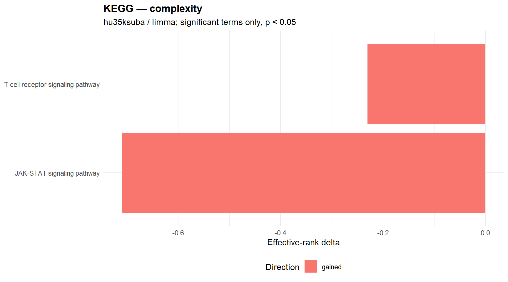
18.0.7.3.14 Entropy signal plot
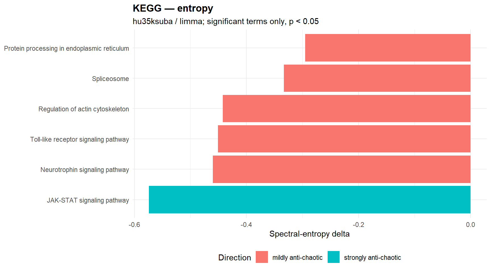
18.0.7.3.15 Significant complexity terms
| gene_set | semantic_block | n_shared_probes | effrank_delta | kappa_delta | direction | p_perm | status |
|---|---|---|---|---|---|---|---|
| T cell receptor signaling pathway | NA | 12 | -0.230 | 385.420 | gained | <0.001 | ok |
| JAK-STAT signaling pathway | NA | 15 | -0.710 | 172.980 | gained | 0.020 | ok |
18.0.7.3.16 Significant entropy terms
| gene_set | semantic_block | n_shared_probes | spectral_delta | shannon_delta | spectral_direction | p_perm_spectral | p_perm_shannon | status |
|---|---|---|---|---|---|---|---|---|
| Neurotrophin signaling pathway | NA | 12 | -0.460 | 0.194 | mildly anti-chaotic | 0.010 | NA | ok |
| Protein processing in endoplasmic reticulum | NA | 13 | -0.295 | 0.197 | mildly anti-chaotic | 0.010 | NA | ok |
| JAK-STAT signaling pathway | NA | 15 | -0.574 | 0.191 | strongly anti-chaotic | 0.020 | NA | ok |
| Toll-like receptor signaling pathway | NA | 10 | -0.451 | 0.192 | mildly anti-chaotic | 0.030 | NA | ok |
| Regulation of actin cytoskeleton | NA | 10 | -0.442 | 0.193 | mildly anti-chaotic | 0.040 | NA | ok |
| Spliceosome | NA | 19 | -0.333 | 0.193 | mildly anti-chaotic | 0.040 | NA | ok |
18.0.7.3.17 Terms significant in both engines
| gene_set | semantic_block | n_shared_probes | complexity_effrank_delta | complexity_direction | complexity_p_perm | entropy_spectral_delta | entropy_spectral_direction | entropy_p_perm_spectral | joint_rank_score |
|---|---|---|---|---|---|---|---|---|---|
| JAK-STAT signaling pathway | NA | 15 | -0.710 | gained | 0.020 | -0.574 | strongly anti-chaotic | 0.020 | 3.398 |
Context summary
| engine | n_rows | n_gene_sets | n_significant_complexity | n_significant_entropy_spectral | median_shared_probes |
|---|---|---|---|---|---|
| complexity | 13 | 13 | 0 | 0 | 20.000 |
| entropy | 13 | 13 | 0 | 4 | 20.000 |
18.0.7.3.18 Complexity signal plot
No significant complexity terms available for plotting.
18.0.7.3.19 Entropy signal plot
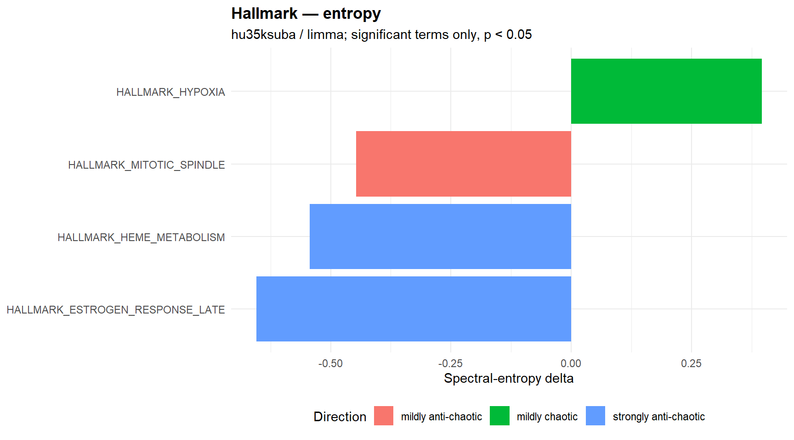
18.0.7.3.20 Significant complexity terms
No significant warehouse rows available for this section.
18.0.7.3.21 Significant entropy terms
| gene_set | semantic_block | n_shared_probes | spectral_delta | shannon_delta | spectral_direction | p_perm_spectral | p_perm_shannon | status |
|---|---|---|---|---|---|---|---|---|
| HALLMARK_ESTROGEN_RESPONSE_LATE | NA | 11 | -0.654 | 0.196 | strongly anti-chaotic | <0.001 | NA | ok |
| HALLMARK_HEME_METABOLISM | NA | 21 | -0.543 | 0.197 | strongly anti-chaotic | <0.001 | NA | ok |
| HALLMARK_MITOTIC_SPINDLE | NA | 30 | -0.447 | 0.191 | mildly anti-chaotic | <0.001 | NA | ok |
| HALLMARK_HYPOXIA | NA | 23 | 0.396 | 0.203 | mildly chaotic | 0.020 | NA | ok |
18.0.7.3.22 Terms significant in both engines
No significant warehouse rows available for this section.
Context summary
| engine | n_rows | n_gene_sets | n_significant_complexity | n_significant_entropy_spectral | median_shared_probes |
|---|---|---|---|---|---|
| complexity | 1083 | 1083 | 50 | 0 | 8.000 |
| entropy | 1083 | 1083 | 0 | 148 | 8.000 |
18.0.7.3.23 Complexity signal plot
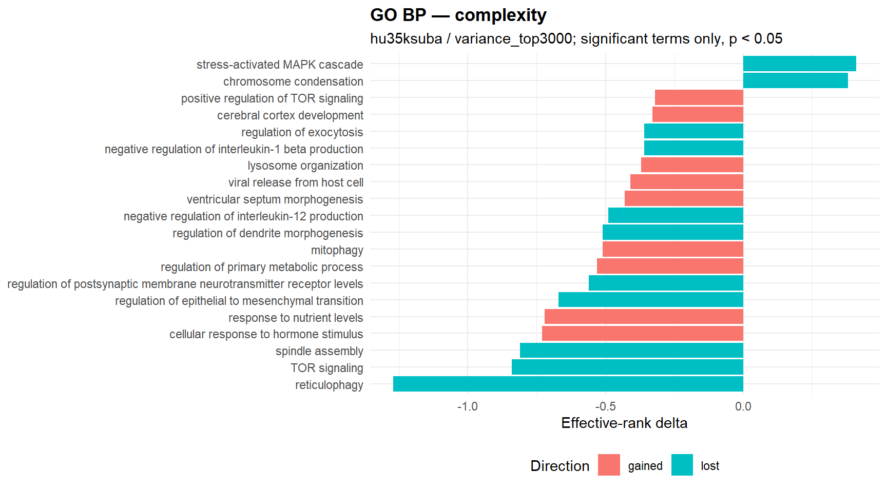
18.0.7.3.24 Entropy signal plot
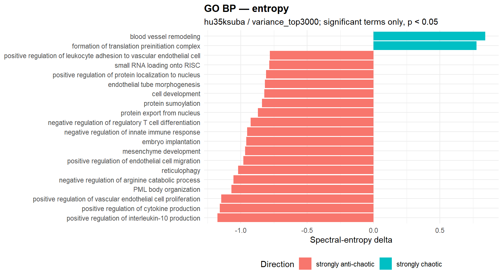
18.0.7.3.25 Significant complexity terms
| gene_set | semantic_block | n_shared_probes | effrank_delta | kappa_delta | direction | p_perm | status |
|---|---|---|---|---|---|---|---|
| TOR signaling | intracellular signal transduction | 5 | -0.840 | -1394.350 | lost | <0.001 | ok |
| regulation of epithelial to mesenchymal transition | mesenchyme development | 7 | -0.670 | -49533.990 | lost | <0.001 | ok |
| cerebral cortex development | central nervous system development | 14 | -0.330 | 294.090 | gained | <0.001 | ok |
| negative regulation of protein kinase activity | regulation of catalytic activity | 7 | -0.280 | -227396.700 | lost | <0.001 | ok |
| vascular endothelial growth factor receptor signaling pathway | cell surface receptor protein tyrosine kinase signaling pathway | 7 | -0.280 | -52855.770 | lost | <0.001 | ok |
| negative regulation of type I interferon-mediated signaling pathway | negative regulation of response to external stimulus | 13 | -0.190 | 190.880 | gained | <0.001 | ok |
| negative regulation of chondrocyte proliferation | regulation of cell population proliferation | 7 | 0.180 | -71330.940 | lost | <0.001 | ok |
| response to insulin | response to nitrogen compound | 5 | -0.150 | -578.910 | lost | <0.001 | ok |
| negative regulation of mitotic cell cycle | mitotic cell cycle | 8 | -0.110 | 652762.360 | gained | <0.001 | ok |
| negative regulation of microtubule depolymerization | cellular component disassembly | 10 | 0.090 | 933.290 | gained | <0.001 | ok |
| regulation of cyclin-dependent protein serine/threonine kinase activity | regulation of catalytic activity | 5 | 0.020 | -1343.590 | lost | <0.001 | ok |
| regulation of cell size | regulation of anatomical structure size | 6 | -0.020 | -3419.060 | lost | <0.001 | ok |
| cellular response to hormone stimulus | cellular response to hormone stimulus | 8 | -0.730 | 16829.330 | gained | 0.010 | ok |
| mitophagy | macroautophagy | 11 | -0.510 | 702.960 | gained | 0.010 | ok |
| negative regulation of interleukin-12 production | negative regulation of multicellular organismal process | 7 | -0.490 | -9541.380 | lost | 0.010 | ok |
| viral release from host cell | biological process involved in interspecies interaction between organisms | 9 | -0.410 | 5061.900 | gained | 0.010 | ok |
| lysosome organization | organelle organization | 10 | -0.370 | 1339.670 | gained | 0.010 | ok |
| regulation of transforming growth factor beta receptor signaling pathway | cellular response to growth factor stimulus | 6 | 0.240 | -927.890 | lost | 0.010 | ok |
| neutrophil activation | leukocyte activation | 7 | -0.080 | -25586.750 | lost | 0.010 | ok |
| regulation of dendrite morphogenesis | cell morphogenesis involved in neuron differentiation | 6 | -0.510 | -741.230 | lost | 0.020 | ok |
18.0.7.3.26 Significant entropy terms
| gene_set | semantic_block | n_shared_probes | spectral_delta | shannon_delta | spectral_direction | p_perm_spectral | p_perm_shannon | status |
|---|---|---|---|---|---|---|---|---|
| mesenchyme development | mesenchyme development | 6 | -0.966 | 0.185 | strongly anti-chaotic | <0.001 | NA | ok |
| embryo implantation | reproductive process | 5 | -0.958 | 0.196 | strongly anti-chaotic | <0.001 | NA | ok |
| negative regulation of innate immune response | negative regulation of response to external stimulus | 8 | -0.951 | 0.189 | strongly anti-chaotic | <0.001 | NA | ok |
| protein export from nucleus | protein transport | 5 | -0.870 | 0.199 | strongly anti-chaotic | <0.001 | NA | ok |
| endothelial tube morphogenesis | tissue morphogenesis | 7 | -0.817 | 0.193 | strongly anti-chaotic | <0.001 | NA | ok |
| formation of translation preinitiation complex | ribonucleoprotein complex biogenesis | 5 | 0.777 | 0.194 | strongly chaotic | <0.001 | NA | ok |
| organic anion transport | organic anion transport | 6 | -0.753 | 0.199 | strongly anti-chaotic | <0.001 | NA | ok |
| positive regulation of protein phosphorylation | regulation of phosphorus metabolic process | 8 | -0.704 | 0.193 | strongly anti-chaotic | <0.001 | NA | ok |
| iron ion transport | metal ion transport | 11 | -0.704 | 0.202 | strongly anti-chaotic | <0.001 | NA | ok |
| positive regulation of activated T cell proliferation | positive regulation of cell-cell adhesion | 9 | -0.680 | 0.190 | strongly anti-chaotic | <0.001 | NA | ok |
| interleukin-6-mediated signaling pathway | cytokine-mediated signaling pathway | 5 | -0.677 | 0.201 | strongly anti-chaotic | <0.001 | NA | ok |
| regulation of JNK cascade | regulation of intracellular signal transduction | 7 | -0.674 | 0.196 | strongly anti-chaotic | <0.001 | NA | ok |
| cellular calcium ion homeostasis | monoatomic cation homeostasis | 9 | -0.573 | 0.192 | strongly anti-chaotic | <0.001 | NA | ok |
| autophagy | autophagy | 49 | -0.548 | 0.196 | strongly anti-chaotic | <0.001 | NA | ok |
| negative regulation of canonical Wnt signaling pathway | negative regulation of signal transduction | 9 | -0.543 | 0.190 | strongly anti-chaotic | <0.001 | NA | ok |
| post-translational protein modification | post-translational protein modification | 13 | -0.537 | 0.195 | strongly anti-chaotic | <0.001 | NA | ok |
| positive regulation of protein kinase B signaling | positive regulation of intracellular signal transduction | 28 | -0.534 | 0.200 | strongly anti-chaotic | <0.001 | NA | ok |
| positive regulation of glycogen biosynthetic process | regulation of small molecule metabolic process | 5 | -0.512 | 0.202 | strongly anti-chaotic | <0.001 | NA | ok |
| cellular response to hormone stimulus | cellular response to hormone stimulus | 8 | -0.505 | 0.199 | strongly anti-chaotic | <0.001 | NA | ok |
| response to estradiol | response to lipid | 9 | -0.489 | 0.201 | mildly anti-chaotic | <0.001 | NA | ok |
18.0.7.3.27 Terms significant in both engines
| gene_set | semantic_block | n_shared_probes | complexity_effrank_delta | complexity_direction | complexity_p_perm | entropy_spectral_delta | entropy_spectral_direction | entropy_p_perm_spectral | joint_rank_score |
|---|---|---|---|---|---|---|---|---|---|
| response to insulin | response to nitrogen compound | 5 | -0.150 | lost | <0.001 | -0.191 | mildly anti-chaotic | 0.010 | 309.653 |
| cellular response to hormone stimulus | cellular response to hormone stimulus | 8 | -0.730 | gained | 0.010 | -0.505 | strongly anti-chaotic | <0.001 | 309.653 |
| regulation of exocytosis | regulation of secretion by cell | 6 | -0.360 | lost | 0.040 | -0.348 | mildly anti-chaotic | <0.001 | 309.051 |
| vascular endothelial growth factor receptor signaling pathway | cell surface receptor protein tyrosine kinase signaling pathway | 7 | -0.280 | lost | <0.001 | -0.309 | mildly anti-chaotic | 0.040 | 309.051 |
| chromosome condensation | chromosome organization | 5 | 0.380 | lost | 0.030 | 0.437 | mildly chaotic | 0.020 | 3.222 |
| ribosomal large subunit assembly | ribonucleoprotein complex biogenesis | 5 | -0.180 | gained | 0.040 | -0.232 | mildly anti-chaotic | 0.020 | 3.097 |
| response to nutrient levels | biological_process | 9 | -0.720 | gained | 0.040 | -0.540 | strongly anti-chaotic | 0.020 | 3.097 |
| reticulophagy | macroautophagy | 7 | -1.270 | lost | 0.040 | -1.018 | strongly anti-chaotic | 0.020 | 3.097 |
| stress-activated MAPK cascade | cellular response to stress | 5 | 0.410 | lost | 0.030 | 0.420 | mildly chaotic | 0.040 | 2.921 |
| regulation of postsynaptic membrane neurotransmitter receptor levels | regulation of biological quality | 7 | -0.560 | lost | 0.040 | -0.440 | mildly anti-chaotic | 0.040 | 2.796 |
18.0.7.3.28 GO semantic clusters
| semantic_cluster_id | semantic_block_name | n_rows | n_terms | n_sig_complexity | n_sig_entropy_spectral | mean_shared_probes |
|---|---|---|---|---|---|---|
| BP_GO_0006468_1 | protein phosphorylation | 10 | 5 | 1 | 2 | 20.000 |
| BP_GO_0051707_3 | response to other organism | 6 | 3 | 0 | 3 | 12.333 |
| BP_GO_1902531_1 | regulation of intracellular signal transduction | 16 | 8 | 1 | 1 | 7.375 |
| BP_GO_0001819_1 | positive regulation of cytokine production | 14 | 7 | 0 | 2 | 8.571 |
| BP_GO_0051241_1 | negative regulation of multicellular organismal process | 14 | 7 | 1 | 1 | 7.571 |
| BP_GO_0051254_1 | positive regulation of RNA metabolic process | 14 | 7 | 0 | 2 | 60.857 |
| BP_GO_0035556_1 | intracellular signal transduction | 12 | 6 | 1 | 1 | 25.167 |
| BP_GO_1902533_1 | positive regulation of intracellular signal transduction | 12 | 6 | 1 | 1 | 22.333 |
| BP_GO_0001819_2 | positive regulation of cytokine production | 6 | 3 | 0 | 2 | 8.667 |
| BP_GO_0007169_1 | cell surface receptor protein tyrosine kinase signaling pathway | 6 | 3 | 1 | 1 | 11.333 |
| BP_GO_0060485_6 | mesenchyme development | 6 | 3 | 1 | 1 | 12.000 |
| BP_GO_0006897_3 | endocytosis | 4 | 2 | 0 | 2 | 9.500 |
| BP_GO_0006935_1 | chemotaxis | 4 | 2 | 0 | 2 | 10.000 |
| BP_GO_0055080_1 | monoatomic cation homeostasis | 4 | 2 | 0 | 2 | 7.500 |
| BP_GO_1901698_3 | response to nitrogen compound | 4 | 2 | 1 | 1 | 5.000 |
| BP_GO_0016236_7 | macroautophagy | 2 | 1 | 1 | 1 | 7.000 |
| BP_GO_0022613_1 | ribonucleoprotein complex biogenesis | 2 | 1 | 1 | 1 | 5.000 |
| BP_GO_0032870_2 | cellular response to hormone stimulus | 2 | 1 | 1 | 1 | 8.000 |
| BP_GO_0033554_3 | cellular response to stress | 2 | 1 | 1 | 1 | 5.000 |
| BP_GO_0051276_6 | chromosome organization | 2 | 1 | 1 | 1 | 5.000 |
Context summary
| engine | n_rows | n_gene_sets | n_significant_complexity | n_significant_entropy_spectral | median_shared_probes |
|---|---|---|---|---|---|
| complexity | 375 | 375 | 17 | 0 | 10.000 |
| entropy | 375 | 375 | 0 | 61 | 10.000 |
18.0.7.3.29 Complexity signal plot
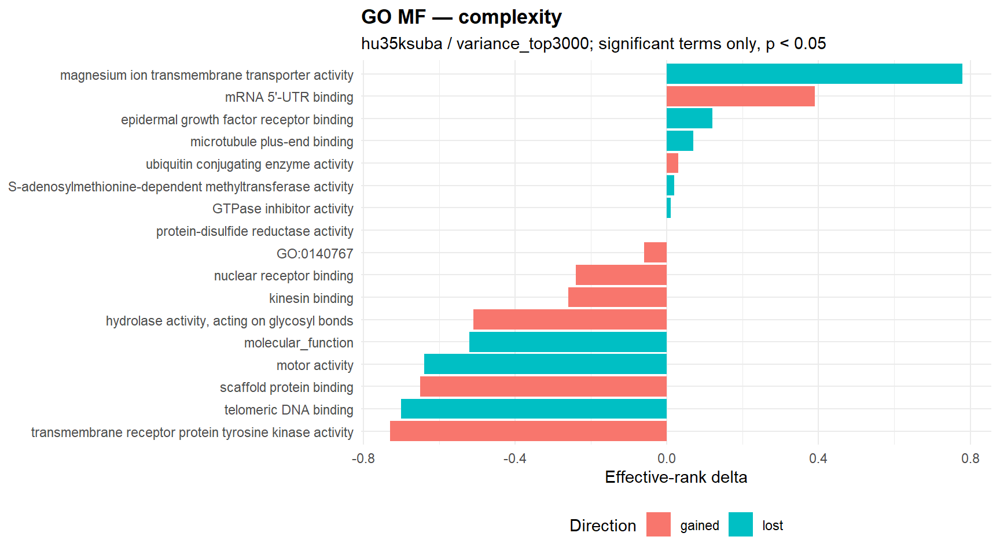
18.0.7.3.30 Entropy signal plot
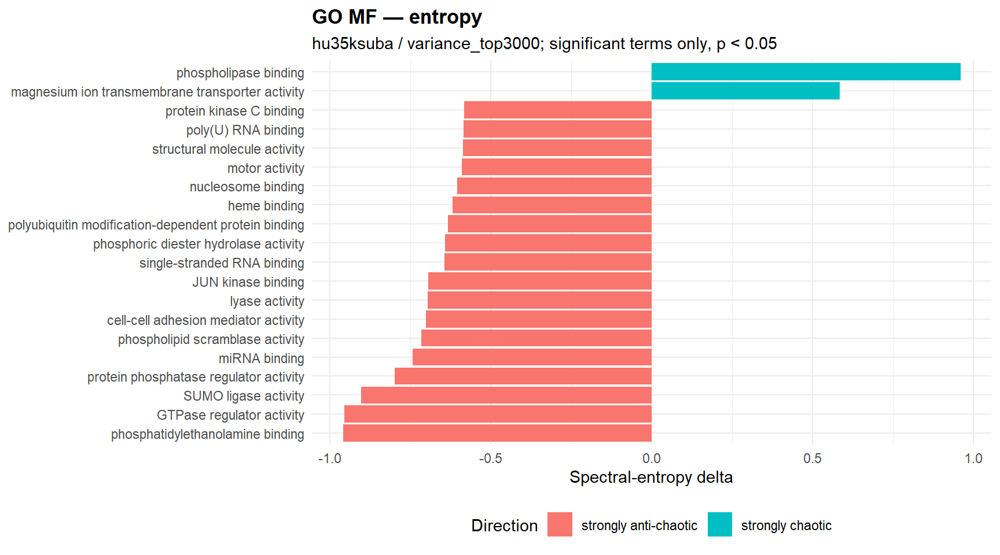
18.0.7.3.31 Significant complexity terms
| gene_set | semantic_block | n_shared_probes | effrank_delta | kappa_delta | direction | p_perm | status |
|---|---|---|---|---|---|---|---|
| magnesium ion transmembrane transporter activity | metal ion transmembrane transporter activity | 5 | 0.780 | -795.790 | lost | <0.001 | ok |
| hydrolase activity, acting on glycosyl bonds | hydrolase activity | 11 | -0.510 | 579.690 | gained | <0.001 | ok |
| mRNA 5’-UTR binding | RNA binding | 10 | 0.390 | 1051.460 | gained | <0.001 | ok |
| S-adenosylmethionine-dependent methyltransferase activity | transferase activity | 6 | 0.020 | -1719.100 | lost | <0.001 | ok |
| protein-disulfide reductase activity | oxidoreductase activity | 6 | 0.000 | -4292.130 | lost | <0.001 | ok |
| telomeric DNA binding | DNA binding | 7 | -0.700 | -71656.670 | lost | 0.010 | ok |
| scaffold protein binding | protein binding | 8 | -0.650 | 18367.370 | gained | 0.010 | ok |
| molecular_function | molecular_function | 7 | -0.520 | -15238.690 | lost | 0.010 | ok |
| epidermal growth factor receptor binding | signaling receptor binding | 5 | 0.120 | -266.600 | lost | 0.020 | ok |
| transmembrane receptor protein tyrosine kinase activity | protein kinase activity | 5 | -0.730 | 251.250 | gained | 0.030 | ok |
| nuclear receptor binding | transcription factor binding | 11 | -0.240 | 715.210 | gained | 0.030 | ok |
| microtubule plus-end binding | cytoskeletal protein binding | 5 | 0.070 | -783.430 | lost | 0.030 | ok |
| GTPase inhibitor activity | enzyme regulator activity | 6 | 0.010 | -1112.340 | lost | 0.030 | ok |
| motor activity | molecular_function | 6 | -0.640 | -633.720 | lost | 0.040 | ok |
| kinesin binding | cytoskeletal protein binding | 14 | -0.260 | 284.490 | gained | 0.040 | ok |
| GO:0140767 | protein-macromolecule adaptor activity | 7 | -0.060 | 6570.320 | gained | 0.040 | ok |
| ubiquitin conjugating enzyme activity | acyltransferase activity | 11 | 0.030 | 547.240 | gained | 0.040 | ok |
18.0.7.3.32 Significant entropy terms
| gene_set | semantic_block | n_shared_probes | spectral_delta | shannon_delta | spectral_direction | p_perm_spectral | p_perm_shannon | status |
|---|---|---|---|---|---|---|---|---|
| phospholipase binding | enzyme binding | 5 | 0.960 | 0.201 | strongly chaotic | <0.001 | NA | ok |
| GTPase regulator activity | enzyme regulator activity | 5 | -0.956 | 0.192 | strongly anti-chaotic | <0.001 | NA | ok |
| SUMO ligase activity | acyltransferase activity | 6 | -0.904 | 0.191 | strongly anti-chaotic | <0.001 | NA | ok |
| lyase activity | catalytic activity | 17 | -0.697 | 0.186 | strongly anti-chaotic | <0.001 | NA | ok |
| single-stranded RNA binding | RNA binding | 12 | -0.644 | 0.182 | strongly anti-chaotic | <0.001 | NA | ok |
| polyubiquitin modification-dependent protein binding | protein binding | 7 | -0.633 | 0.189 | strongly anti-chaotic | <0.001 | NA | ok |
| nucleosome binding | protein-containing complex binding | 6 | -0.605 | 0.191 | strongly anti-chaotic | <0.001 | NA | ok |
| molecular_function | molecular_function | 7 | -0.465 | 0.195 | mildly anti-chaotic | <0.001 | NA | ok |
| protein serine/threonine kinase inhibitor activity | enzyme regulator activity | 9 | -0.451 | 0.194 | mildly anti-chaotic | <0.001 | NA | ok |
| kinesin binding | cytoskeletal protein binding | 14 | -0.300 | 0.184 | mildly anti-chaotic | <0.001 | NA | ok |
| phosphatidylethanolamine binding | lipid binding | 7 | -0.960 | 0.199 | strongly anti-chaotic | 0.010 | NA | ok |
| JUN kinase binding | enzyme binding | 6 | -0.694 | 0.185 | strongly anti-chaotic | 0.010 | NA | ok |
| heme binding | binding | 13 | -0.620 | 0.192 | strongly anti-chaotic | 0.010 | NA | ok |
| motor activity | molecular_function | 6 | -0.591 | 0.195 | strongly anti-chaotic | 0.010 | NA | ok |
| poly(U) RNA binding | RNA binding | 5 | -0.585 | 0.186 | strongly anti-chaotic | 0.010 | NA | ok |
| protein kinase C binding | enzyme binding | 8 | -0.584 | 0.191 | strongly anti-chaotic | 0.010 | NA | ok |
| scaffold protein binding | protein binding | 8 | -0.583 | 0.194 | strongly anti-chaotic | 0.010 | NA | ok |
| cargo receptor activity | molecular_function | 8 | -0.529 | 0.192 | strongly anti-chaotic | 0.010 | NA | ok |
| flavin adenine dinucleotide binding | anion binding | 7 | -0.509 | 0.191 | strongly anti-chaotic | 0.010 | NA | ok |
| kinase binding | enzyme binding | 15 | -0.424 | 0.197 | mildly anti-chaotic | 0.010 | NA | ok |
18.0.7.3.33 Terms significant in both engines
| gene_set | semantic_block | n_shared_probes | complexity_effrank_delta | complexity_direction | complexity_p_perm | entropy_spectral_delta | entropy_spectral_direction | entropy_p_perm_spectral | joint_rank_score |
|---|---|---|---|---|---|---|---|---|---|
| molecular_function | molecular_function | 7 | -0.520 | lost | 0.010 | -0.465 | mildly anti-chaotic | <0.001 | 309.653 |
| magnesium ion transmembrane transporter activity | metal ion transmembrane transporter activity | 5 | 0.780 | lost | <0.001 | 0.585 | strongly chaotic | 0.040 | 309.051 |
| kinesin binding | cytoskeletal protein binding | 14 | -0.260 | gained | 0.040 | -0.300 | mildly anti-chaotic | <0.001 | 309.051 |
| scaffold protein binding | protein binding | 8 | -0.650 | gained | 0.010 | -0.583 | strongly anti-chaotic | 0.010 | 4.000 |
| motor activity | molecular_function | 6 | -0.640 | lost | 0.040 | -0.591 | strongly anti-chaotic | 0.010 | 3.398 |
18.0.7.3.34 GO semantic clusters
| semantic_cluster_id | semantic_block_name | n_rows | n_terms | n_sig_complexity | n_sig_entropy_spectral | mean_shared_probes |
|---|---|---|---|---|---|---|
| MF_GO_0019899_3 | enzyme binding | 10 | 5 | 0 | 3 | 26.800 |
| MF_GO_0008134_4 | transcription factor binding | 8 | 4 | 1 | 1 | 7.750 |
| MF_GO_1901363_1 | heterocyclic compound binding | 6 | 3 | 0 | 2 | 121.333 |
| MF_GO_0003824_6 | catalytic activity | 4 | 2 | 0 | 2 | 38.000 |
| MF_GO_0008289_9 | lipid binding | 4 | 2 | 0 | 2 | 13.000 |
| MF_GO_0016787_6 | hydrolase activity | 4 | 2 | 1 | 1 | 8.500 |
| MF_GO_0046873_3 | metal ion transmembrane transporter activity | 4 | 2 | 1 | 1 | 5.000 |
| MF_GO_0005515_89 | protein binding | 2 | 1 | 1 | 1 | 8.000 |
| MF_GO_0008092_6 | cytoskeletal protein binding | 2 | 1 | 1 | 1 | 14.000 |
| MF_molecular_function_11 | molecular_function | 2 | 1 | 1 | 1 | 6.000 |
| MF_molecular_function_7 | molecular_function | 2 | 1 | 1 | 1 | 7.000 |
| MF_GO_0003677_3 | DNA binding | 6 | 3 | 0 | 1 | 41.667 |
| MF_GO_0003723_3 | RNA binding | 6 | 3 | 0 | 1 | 10.000 |
| MF_GO_0008092_3 | cytoskeletal protein binding | 6 | 3 | 1 | 0 | 21.667 |
| MF_GO_0008092_4 | cytoskeletal protein binding | 6 | 3 | 0 | 1 | 12.000 |
| MF_GO_0008289_11 | lipid binding | 6 | 3 | 0 | 1 | 7.333 |
| MF_GO_0003677_13 | DNA binding | 4 | 2 | 1 | 0 | 34.500 |
| MF_GO_0003677_4 | DNA binding | 4 | 2 | 0 | 1 | 79.500 |
| MF_GO_0003723_4 | RNA binding | 4 | 2 | 1 | 0 | 45.500 |
| MF_GO_0005515_1 | protein binding | 4 | 2 | 0 | 1 | 1148.000 |
Context summary
| engine | n_rows | n_gene_sets | n_significant_complexity | n_significant_entropy_spectral | median_shared_probes |
|---|---|---|---|---|---|
| complexity | 54 | 54 | 0 | 0 | 22.000 |
| entropy | 54 | 54 | 0 | 4 | 22.000 |
18.0.7.3.35 Complexity signal plot
No significant complexity terms available for plotting.
18.0.7.3.36 Entropy signal plot
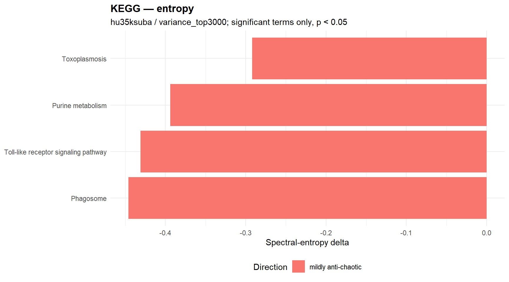
18.0.7.3.37 Significant complexity terms
No significant warehouse rows available for this section.
18.0.7.3.38 Significant entropy terms
| gene_set | semantic_block | n_shared_probes | spectral_delta | shannon_delta | spectral_direction | p_perm_spectral | p_perm_shannon | status |
|---|---|---|---|---|---|---|---|---|
| Phagosome | NA | 24 | -0.446 | 0.196 | mildly anti-chaotic | <0.001 | NA | ok |
| Toll-like receptor signaling pathway | NA | 14 | -0.431 | 0.193 | mildly anti-chaotic | <0.001 | NA | ok |
| Toxoplasmosis | NA | 13 | -0.292 | 0.194 | mildly anti-chaotic | 0.010 | NA | ok |
| Purine metabolism | NA | 16 | -0.394 | 0.193 | mildly anti-chaotic | 0.030 | NA | ok |
18.0.7.3.39 Terms significant in both engines
No significant warehouse rows available for this section.
Context summary
| engine | n_rows | n_gene_sets | n_significant_complexity | n_significant_entropy_spectral | median_shared_probes |
|---|---|---|---|---|---|
| complexity | 13 | 13 | 0 | 0 | 50.000 |
| entropy | 13 | 13 | 0 | 5 | 50.000 |
18.0.7.3.40 Complexity signal plot
No significant complexity terms available for plotting.
18.0.7.3.41 Entropy signal plot
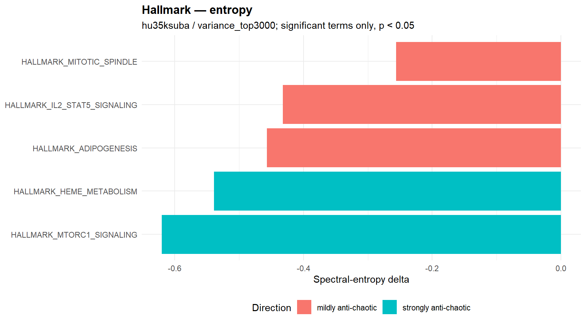
18.0.7.3.42 Significant complexity terms
No significant warehouse rows available for this section.
18.0.7.3.43 Significant entropy terms
| gene_set | semantic_block | n_shared_probes | spectral_delta | shannon_delta | spectral_direction | p_perm_spectral | p_perm_shannon | status |
|---|---|---|---|---|---|---|---|---|
| HALLMARK_MTORC1_SIGNALING | NA | 52 | -0.620 | 0.191 | strongly anti-chaotic | 0.010 | NA | ok |
| HALLMARK_HEME_METABOLISM | NA | 55 | -0.539 | 0.197 | strongly anti-chaotic | 0.020 | NA | ok |
| HALLMARK_IL2_STAT5_SIGNALING | NA | 46 | -0.432 | 0.200 | mildly anti-chaotic | 0.020 | NA | ok |
| HALLMARK_ADIPOGENESIS | NA | 42 | -0.457 | 0.195 | mildly anti-chaotic | 0.040 | NA | ok |
| HALLMARK_MITOTIC_SPINDLE | NA | 58 | -0.256 | 0.193 | mildly anti-chaotic | 0.040 | NA | ok |
18.0.7.3.44 Terms significant in both engines
No significant warehouse rows available for this section.
Context summary
| engine | n_rows | n_gene_sets | n_significant_complexity | n_significant_entropy_spectral | median_shared_probes |
|---|---|---|---|---|---|
| complexity | 736 | 736 | 50 | 0 | 8.000 |
| entropy | 736 | 736 | 0 | 427 | 8.000 |
18.0.7.3.45 Complexity signal plot
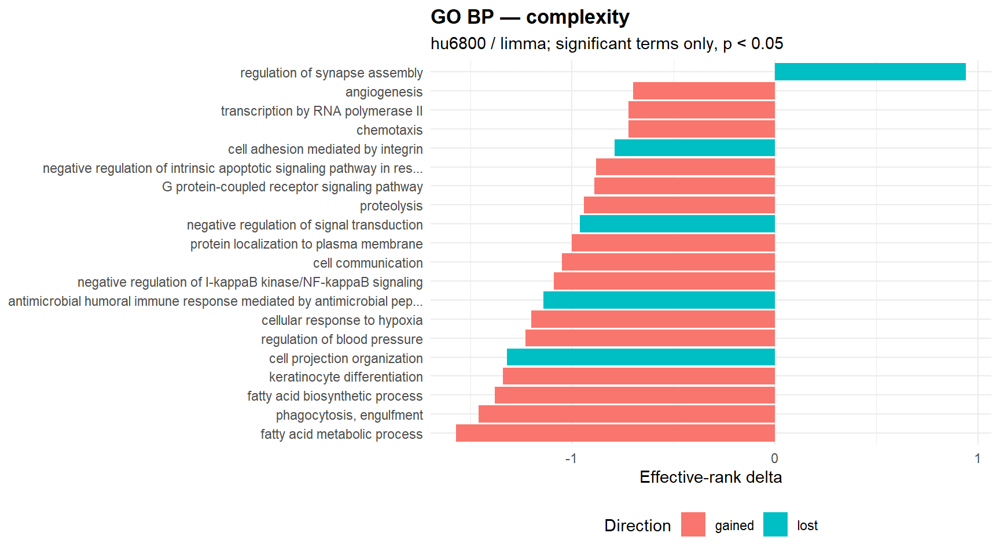
18.0.7.3.46 Entropy signal plot
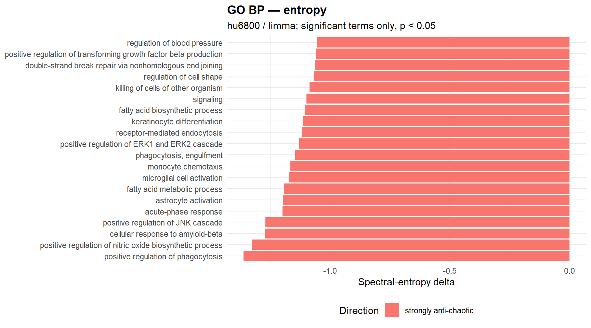
18.0.7.3.47 Significant complexity terms
| gene_set | semantic_block | n_shared_probes | effrank_delta | kappa_delta | direction | p_perm | status |
|---|---|---|---|---|---|---|---|
| fatty acid metabolic process | fatty acid metabolic process | 22 | -1.570 | 139.520 | gained | <0.001 | ok |
| cell projection organization | cell projection organization | 7 | -1.320 | -227446.250 | lost | <0.001 | ok |
| antimicrobial humoral immune response mediated by antimicrobial peptide | defense response to symbiont | 21 | -1.140 | -172.710 | lost | <0.001 | ok |
| negative regulation of I-kappaB kinase/NF-kappaB signaling | negative regulation of intracellular signal transduction | 15 | -1.090 | 366.630 | gained | <0.001 | ok |
| regulation of synapse assembly | cell junction assembly | 5 | 0.940 | -377.150 | lost | <0.001 | ok |
| transcription by RNA polymerase II | DNA-templated transcription | 16 | -0.720 | 440.510 | gained | <0.001 | ok |
| positive regulation of leukocyte adhesion to vascular endothelial cell | positive regulation of cell-cell adhesion | 7 | -0.540 | -107003.900 | lost | <0.001 | ok |
| negative regulation of smooth muscle cell proliferation | regulation of cell population proliferation | 5 | -0.270 | -413.210 | lost | <0.001 | ok |
| vasculogenesis | blood vessel morphogenesis | 5 | -0.230 | -939.850 | lost | <0.001 | ok |
| neuron apoptotic process | apoptotic process | 5 | -0.160 | -3133.940 | lost | <0.001 | ok |
| phagocytosis, engulfment | endocytosis | 9 | -1.460 | 1378.940 | gained | 0.010 | ok |
| fatty acid biosynthetic process | fatty acid metabolic process | 11 | -1.380 | 823.420 | gained | 0.010 | ok |
| proteolysis | proteolysis | 49 | -0.940 | 133.020 | gained | 0.010 | ok |
| protein kinase B signaling | intracellular signal transduction | 6 | -0.490 | 1901.690 | gained | 0.010 | ok |
| B cell activation | lymphocyte activation | 7 | -0.380 | -38343.720 | lost | 0.010 | ok |
| cellular response to angiotensin | cellular response to nitrogen compound | 7 | -0.310 | -16651.760 | lost | 0.010 | ok |
| ubiquitin-dependent protein catabolic process | protein catabolic process | 15 | -0.270 | 293.580 | gained | 0.010 | ok |
| peptide antigen assembly with MHC class II protein complex | protein-containing complex assembly | 5 | -0.020 | 2438.200 | gained | 0.010 | ok |
| antigen processing and presentation of peptide antigen via MHC class I | immune system process | 5 | 0.000 | -494.720 | lost | 0.010 | ok |
| regulation of blood pressure | blood circulation | 16 | -1.230 | 317.140 | gained | 0.020 | ok |
18.0.7.3.48 Significant entropy terms
| gene_set | semantic_block | n_shared_probes | spectral_delta | shannon_delta | spectral_direction | p_perm_spectral | p_perm_shannon | status |
|---|---|---|---|---|---|---|---|---|
| positive regulation of phagocytosis | regulation of vesicle-mediated transport | 10 | -1.362 | 0.195 | strongly anti-chaotic | <0.001 | NA | ok |
| positive regulation of nitric oxide biosynthetic process | positive regulation of biosynthetic process | 10 | -1.327 | 0.209 | strongly anti-chaotic | <0.001 | NA | ok |
| cellular response to amyloid-beta | cellular response to nitrogen compound | 12 | -1.272 | 0.188 | strongly anti-chaotic | <0.001 | NA | ok |
| positive regulation of JNK cascade | positive regulation of intracellular signal transduction | 8 | -1.270 | 0.190 | strongly anti-chaotic | <0.001 | NA | ok |
| acute-phase response | inflammatory response | 8 | -1.199 | 0.201 | strongly anti-chaotic | <0.001 | NA | ok |
| astrocyte activation | central nervous system development | 6 | -1.197 | 0.196 | strongly anti-chaotic | <0.001 | NA | ok |
| fatty acid metabolic process | fatty acid metabolic process | 22 | -1.193 | 0.204 | strongly anti-chaotic | <0.001 | NA | ok |
| microglial cell activation | inflammatory response | 10 | -1.173 | 0.207 | strongly anti-chaotic | <0.001 | NA | ok |
| monocyte chemotaxis | leukocyte migration | 11 | -1.166 | 0.187 | strongly anti-chaotic | <0.001 | NA | ok |
| phagocytosis, engulfment | endocytosis | 9 | -1.146 | 0.193 | strongly anti-chaotic | <0.001 | NA | ok |
| positive regulation of ERK1 and ERK2 cascade | positive regulation of intracellular signal transduction | 27 | -1.129 | 0.199 | strongly anti-chaotic | <0.001 | NA | ok |
| receptor-mediated endocytosis | endocytosis | 10 | -1.119 | 0.203 | strongly anti-chaotic | <0.001 | NA | ok |
| keratinocyte differentiation | epithelial cell differentiation | 9 | -1.113 | 0.184 | strongly anti-chaotic | <0.001 | NA | ok |
| fatty acid biosynthetic process | fatty acid metabolic process | 11 | -1.106 | 0.201 | strongly anti-chaotic | <0.001 | NA | ok |
| signaling | signaling | 5 | -1.099 | 0.203 | strongly anti-chaotic | <0.001 | NA | ok |
| killing of cells of other organism | biological process involved in interspecies interaction between organisms | 15 | -1.086 | 0.202 | strongly anti-chaotic | <0.001 | NA | ok |
| regulation of cell shape | regulation of anatomical structure morphogenesis | 16 | -1.068 | 0.190 | strongly anti-chaotic | <0.001 | NA | ok |
| double-strand break repair via nonhomologous end joining | DNA repair | 7 | -1.064 | 0.189 | strongly anti-chaotic | <0.001 | NA | ok |
| positive regulation of transforming growth factor beta production | positive regulation of cytokine production | 6 | -1.060 | 0.195 | strongly anti-chaotic | <0.001 | NA | ok |
| regulation of neuroinflammatory response | inflammatory response | 6 | -1.053 | 0.217 | strongly anti-chaotic | <0.001 | NA | ok |
18.0.7.3.49 Terms significant in both engines
| gene_set | semantic_block | n_shared_probes | complexity_effrank_delta | complexity_direction | complexity_p_perm | entropy_spectral_delta | entropy_spectral_direction | entropy_p_perm_spectral | joint_rank_score |
|---|---|---|---|---|---|---|---|---|---|
| fatty acid metabolic process | fatty acid metabolic process | 22 | -1.570 | gained | <0.001 | -1.193 | strongly anti-chaotic | <0.001 | 615.305 |
| cell projection organization | cell projection organization | 7 | -1.320 | lost | <0.001 | -0.984 | strongly anti-chaotic | <0.001 | 615.305 |
| negative regulation of I-kappaB kinase/NF-kappaB signaling | negative regulation of intracellular signal transduction | 15 | -1.090 | gained | <0.001 | -0.906 | strongly anti-chaotic | <0.001 | 615.305 |
| regulation of synapse assembly | cell junction assembly | 5 | 0.940 | lost | <0.001 | 0.733 | strongly chaotic | <0.001 | 615.305 |
| antimicrobial humoral immune response mediated by antimicrobial peptide | defense response to symbiont | 21 | -1.140 | lost | <0.001 | -0.931 | strongly anti-chaotic | <0.001 | 615.305 |
| positive regulation of leukocyte adhesion to vascular endothelial cell | positive regulation of cell-cell adhesion | 7 | -0.540 | lost | <0.001 | -0.553 | strongly anti-chaotic | <0.001 | 615.305 |
| transcription by RNA polymerase II | DNA-templated transcription | 16 | -0.720 | gained | <0.001 | -0.637 | strongly anti-chaotic | 0.010 | 309.653 |
| proteolysis | proteolysis | 49 | -0.940 | gained | 0.010 | -0.823 | strongly anti-chaotic | <0.001 | 309.653 |
| fatty acid biosynthetic process | fatty acid metabolic process | 11 | -1.380 | gained | 0.010 | -1.106 | strongly anti-chaotic | <0.001 | 309.653 |
| phagocytosis, engulfment | endocytosis | 9 | -1.460 | gained | 0.010 | -1.146 | strongly anti-chaotic | <0.001 | 309.653 |
| angiogenesis | blood vessel morphogenesis | 37 | -0.700 | gained | 0.020 | -0.601 | strongly anti-chaotic | <0.001 | 309.352 |
| cell-matrix adhesion | cell adhesion | 18 | -0.690 | gained | 0.020 | -0.664 | strongly anti-chaotic | <0.001 | 309.352 |
| negative regulation of cell adhesion | regulation of cell adhesion | 8 | -0.230 | gained | 0.020 | -0.279 | mildly anti-chaotic | <0.001 | 309.352 |
| positive regulation of interleukin-4 production | positive regulation of cytokine production | 6 | -0.350 | lost | 0.020 | -0.394 | mildly anti-chaotic | <0.001 | 309.352 |
| regulation of angiogenesis | regulation of anatomical structure morphogenesis | 5 | -0.350 | gained | 0.020 | -0.395 | mildly anti-chaotic | <0.001 | 309.352 |
| brain development | central nervous system development | 14 | -0.670 | gained | 0.030 | -0.617 | strongly anti-chaotic | <0.001 | 309.176 |
| cell adhesion mediated by integrin | cell adhesion | 6 | -0.790 | lost | 0.030 | -0.771 | strongly anti-chaotic | <0.001 | 309.176 |
| protein localization to plasma membrane | localization within membrane | 14 | -1.000 | gained | 0.030 | -0.861 | strongly anti-chaotic | <0.001 | 309.176 |
| cell communication | cell communication | 5 | -1.050 | gained | 0.040 | -1.018 | strongly anti-chaotic | <0.001 | 309.051 |
| G protein-coupled receptor signaling pathway | G protein-coupled receptor signaling pathway | 57 | -0.890 | gained | 0.040 | -0.791 | strongly anti-chaotic | <0.001 | 309.051 |
18.0.7.3.50 GO semantic clusters
| semantic_cluster_id | semantic_block_name | n_rows | n_terms | n_sig_complexity | n_sig_entropy_spectral | mean_shared_probes |
|---|---|---|---|---|---|---|
| BP_GO_0001819_1 | positive regulation of cytokine production | 16 | 8 | 1 | 7 | 10.500 |
| BP_GO_0007186_2 | G protein-coupled receptor signaling pathway | 14 | 7 | 1 | 7 | 17.714 |
| BP_GO_0035556_1 | intracellular signal transduction | 10 | 5 | 1 | 4 | 20.200 |
| BP_GO_0007166_1 | cell surface receptor signaling pathway | 10 | 5 | 0 | 4 | 19.200 |
| BP_GO_0051254_1 | positive regulation of RNA metabolic process | 10 | 5 | 0 | 4 | 55.200 |
| BP_GO_0006351_1 | DNA-templated transcription | 8 | 4 | 1 | 3 | 12.500 |
| BP_GO_0007169_1 | cell surface receptor protein tyrosine kinase signaling pathway | 8 | 4 | 0 | 4 | 7.500 |
| BP_GO_0097190_5 | apoptotic signaling pathway | 8 | 4 | 1 | 3 | 6.750 |
| BP_GO_1902532_1 | negative regulation of intracellular signal transduction | 8 | 4 | 1 | 3 | 7.750 |
| BP_GO_0022603_2 | regulation of anatomical structure morphogenesis | 6 | 3 | 1 | 3 | 16.000 |
| BP_GO_0071363_6 | cellular response to growth factor stimulus | 8 | 4 | 0 | 3 | 8.250 |
| BP_GO_0019221_4 | cytokine-mediated signaling pathway | 6 | 3 | 0 | 3 | 14.333 |
| BP_GO_0040007_1 | growth | 6 | 3 | 0 | 3 | 11.000 |
| BP_GO_0045934_1 | negative regulation of nucleobase-containing compound metabolic process | 6 | 3 | 0 | 3 | 63.667 |
| BP_GO_0050900_1 | leukocyte migration | 6 | 3 | 0 | 3 | 7.333 |
| BP_GO_0051604_4 | protein maturation | 6 | 3 | 0 | 3 | 8.333 |
| BP_GO_0051707_5 | response to other organism | 6 | 3 | 0 | 3 | 21.000 |
| BP_GO_0070887_1 | cellular response to chemical stimulus | 6 | 3 | 0 | 3 | 8.667 |
| BP_GO_1901699_4 | cellular response to nitrogen compound | 6 | 3 | 1 | 2 | 9.333 |
| BP_GO_0006508_1 | proteolysis | 4 | 2 | 1 | 2 | 28.500 |
Context summary
| engine | n_rows | n_gene_sets | n_significant_complexity | n_significant_entropy_spectral | median_shared_probes |
|---|---|---|---|---|---|
| complexity | 301 | 301 | 17 | 0 | 10.000 |
| entropy | 301 | 301 | 0 | 196 | 10.000 |
18.0.7.3.51 Complexity signal plot
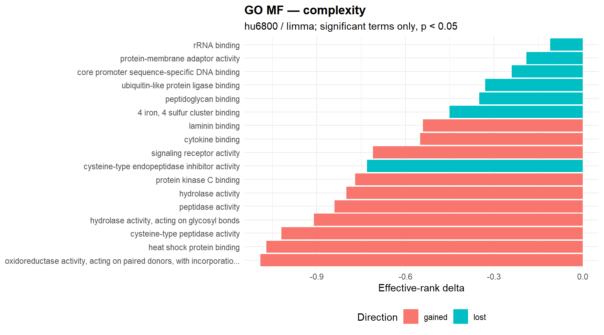
18.0.7.3.52 Entropy signal plot
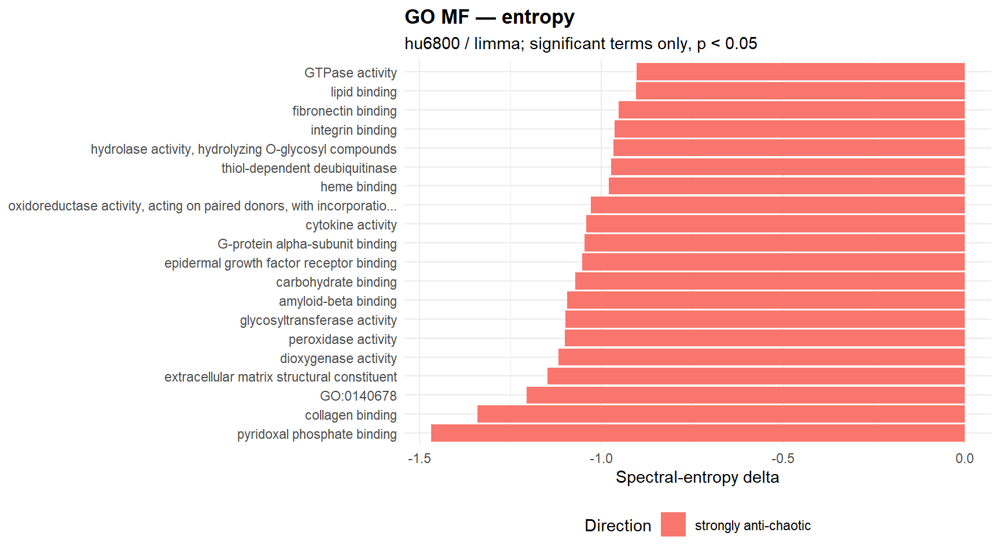
18.0.7.3.53 Significant complexity terms
| gene_set | semantic_block | n_shared_probes | effrank_delta | kappa_delta | direction | p_perm | status |
|---|---|---|---|---|---|---|---|
| peptidase activity | peptidase activity | 43 | -0.840 | 122.550 | gained | <0.001 | ok |
| ubiquitin-like protein ligase binding | enzyme binding | 7 | -0.330 | -102743.080 | lost | <0.001 | ok |
| rRNA binding | RNA binding | 5 | -0.110 | -1866.470 | lost | <0.001 | ok |
| heat shock protein binding | protein binding | 10 | -1.070 | 726.820 | gained | 0.010 | ok |
| hydrolase activity, acting on glycosyl bonds | hydrolase activity | 14 | -0.910 | 487.330 | gained | 0.010 | ok |
| signaling receptor activity | signaling receptor activity | 36 | -0.710 | 90.490 | gained | 0.010 | ok |
| cytokine binding | protein binding | 9 | -0.550 | 7631.890 | gained | 0.010 | ok |
| laminin binding | protein binding | 5 | -0.540 | 281.420 | gained | 0.010 | ok |
| peptidoglycan binding | carbohydrate derivative binding | 5 | -0.350 | -352.730 | lost | 0.010 | ok |
| oxidoreductase activity, acting on paired donors, with incorporation or reduction of molecular oxygen | oxidoreductase activity | 11 | -1.090 | 698.160 | gained | 0.020 | ok |
| cysteine-type peptidase activity | peptidase activity | 15 | -1.020 | 173.330 | gained | 0.020 | ok |
| cysteine-type endopeptidase inhibitor activity | enzyme regulator activity | 6 | -0.730 | -1438.470 | lost | 0.020 | ok |
| 4 iron, 4 sulfur cluster binding | small molecule binding | 7 | -0.450 | -51062.160 | lost | 0.030 | ok |
| protein-membrane adaptor activity | protein-macromolecule adaptor activity | 5 | -0.190 | -327.600 | lost | 0.030 | ok |
| hydrolase activity | hydrolase activity | 170 | -0.800 | 60.160 | gained | 0.040 | ok |
| protein kinase C binding | enzyme binding | 11 | -0.770 | 666.670 | gained | 0.040 | ok |
| core promoter sequence-specific DNA binding | DNA binding | 5 | -0.240 | -298.930 | lost | 0.040 | ok |
18.0.7.3.54 Significant entropy terms
| gene_set | semantic_block | n_shared_probes | spectral_delta | shannon_delta | spectral_direction | p_perm_spectral | p_perm_shannon | status |
|---|---|---|---|---|---|---|---|---|
| pyridoxal phosphate binding | anion binding | 6 | -1.468 | 0.184 | strongly anti-chaotic | <0.001 | NA | ok |
| collagen binding | protein-containing complex binding | 12 | -1.341 | 0.192 | strongly anti-chaotic | <0.001 | NA | ok |
| GO:0140678 | molecular function regulator activity | 5 | -1.206 | 0.194 | strongly anti-chaotic | <0.001 | NA | ok |
| extracellular matrix structural constituent | molecular_function | 14 | -1.149 | 0.194 | strongly anti-chaotic | <0.001 | NA | ok |
| dioxygenase activity | oxidoreductase activity | 9 | -1.118 | 0.194 | strongly anti-chaotic | <0.001 | NA | ok |
| peroxidase activity | oxidoreductase activity | 7 | -1.101 | 0.194 | strongly anti-chaotic | <0.001 | NA | ok |
| glycosyltransferase activity | transferase activity | 12 | -1.099 | 0.193 | strongly anti-chaotic | <0.001 | NA | ok |
| amyloid-beta binding | binding | 14 | -1.094 | 0.198 | strongly anti-chaotic | <0.001 | NA | ok |
| carbohydrate binding | binding | 18 | -1.072 | 0.197 | strongly anti-chaotic | <0.001 | NA | ok |
| epidermal growth factor receptor binding | signaling receptor binding | 5 | -1.052 | 0.193 | strongly anti-chaotic | <0.001 | NA | ok |
| G-protein alpha-subunit binding | protein binding | 6 | -1.046 | 0.208 | strongly anti-chaotic | <0.001 | NA | ok |
| cytokine activity | molecular function regulator activity | 23 | -1.042 | 0.206 | strongly anti-chaotic | <0.001 | NA | ok |
| oxidoreductase activity, acting on paired donors, with incorporation or reduction of molecular oxygen | oxidoreductase activity | 11 | -1.029 | 0.207 | strongly anti-chaotic | <0.001 | NA | ok |
| heme binding | binding | 16 | -0.980 | 0.202 | strongly anti-chaotic | <0.001 | NA | ok |
| hydrolase activity, hydrolyzing O-glycosyl compounds | hydrolase activity | 5 | -0.967 | 0.192 | strongly anti-chaotic | <0.001 | NA | ok |
| integrin binding | protein-containing complex binding | 21 | -0.963 | 0.202 | strongly anti-chaotic | <0.001 | NA | ok |
| fibronectin binding | protein binding | 7 | -0.953 | 0.196 | strongly anti-chaotic | <0.001 | NA | ok |
| lipid binding | lipid binding | 30 | -0.905 | 0.191 | strongly anti-chaotic | <0.001 | NA | ok |
| GTPase activity | hydrolase activity | 40 | -0.903 | 0.187 | strongly anti-chaotic | <0.001 | NA | ok |
| cargo receptor activity | molecular_function | 7 | -0.897 | 0.223 | strongly anti-chaotic | <0.001 | NA | ok |
18.0.7.3.55 Terms significant in both engines
| gene_set | semantic_block | n_shared_probes | complexity_effrank_delta | complexity_direction | complexity_p_perm | entropy_spectral_delta | entropy_spectral_direction | entropy_p_perm_spectral | joint_rank_score |
|---|---|---|---|---|---|---|---|---|---|
| peptidase activity | peptidase activity | 43 | -0.840 | gained | <0.001 | -0.757 | strongly anti-chaotic | <0.001 | 615.305 |
| hydrolase activity, acting on glycosyl bonds | hydrolase activity | 14 | -0.910 | gained | 0.010 | -0.755 | strongly anti-chaotic | <0.001 | 309.653 |
| cytokine binding | protein binding | 9 | -0.550 | gained | 0.010 | -0.563 | strongly anti-chaotic | <0.001 | 309.653 |
| heat shock protein binding | protein binding | 10 | -1.070 | gained | 0.010 | -0.838 | strongly anti-chaotic | <0.001 | 309.653 |
| signaling receptor activity | signaling receptor activity | 36 | -0.710 | gained | 0.010 | -0.672 | strongly anti-chaotic | <0.001 | 309.653 |
| laminin binding | protein binding | 5 | -0.540 | gained | 0.010 | -0.606 | strongly anti-chaotic | <0.001 | 309.653 |
| ubiquitin-like protein ligase binding | enzyme binding | 7 | -0.330 | lost | <0.001 | -0.321 | mildly anti-chaotic | 0.010 | 309.653 |
| cysteine-type endopeptidase inhibitor activity | enzyme regulator activity | 6 | -0.730 | lost | 0.020 | -0.713 | strongly anti-chaotic | <0.001 | 309.352 |
| cysteine-type peptidase activity | peptidase activity | 15 | -1.020 | gained | 0.020 | -0.728 | strongly anti-chaotic | <0.001 | 309.352 |
| oxidoreductase activity, acting on paired donors, with incorporation or reduction of molecular oxygen | oxidoreductase activity | 11 | -1.090 | gained | 0.020 | -1.029 | strongly anti-chaotic | <0.001 | 309.352 |
| 4 iron, 4 sulfur cluster binding | small molecule binding | 7 | -0.450 | lost | 0.030 | -0.505 | strongly anti-chaotic | <0.001 | 309.176 |
| hydrolase activity | hydrolase activity | 170 | -0.800 | gained | 0.040 | -0.722 | strongly anti-chaotic | <0.001 | 309.051 |
| protein kinase C binding | enzyme binding | 11 | -0.770 | gained | 0.040 | -0.713 | strongly anti-chaotic | 0.010 | 3.398 |
18.0.7.3.56 GO semantic clusters
| semantic_cluster_id | semantic_block_name | n_rows | n_terms | n_sig_complexity | n_sig_entropy_spectral | mean_shared_probes |
|---|---|---|---|---|---|---|
| MF_GO_0008233_1 | peptidase activity | 8 | 4 | 2 | 4 | 21.250 |
| MF_GO_0030234_5 | enzyme regulator activity | 8 | 4 | 1 | 4 | 9.000 |
| MF_GO_0019899_3 | enzyme binding | 8 | 4 | 1 | 3 | 25.000 |
| MF_GO_0003677_3 | DNA binding | 10 | 5 | 1 | 2 | 22.600 |
| MF_GO_0003723_1 | RNA binding | 8 | 4 | 0 | 3 | 57.750 |
| MF_GO_0004672_1 | protein kinase activity | 8 | 4 | 0 | 3 | 25.500 |
| MF_GO_0003723_4 | RNA binding | 6 | 3 | 0 | 3 | 14.000 |
| MF_GO_0042578_7 | phosphoric ester hydrolase activity | 6 | 3 | 0 | 3 | 11.333 |
| MF_GO_0043169_1 | cation binding | 6 | 3 | 0 | 3 | 122.000 |
| MF_GO_1901363_1 | heterocyclic compound binding | 6 | 3 | 0 | 3 | 79.333 |
| MF_GO_0005515_28 | protein binding | 4 | 2 | 1 | 2 | 8.500 |
| MF_GO_0016787_6 | hydrolase activity | 4 | 2 | 1 | 2 | 9.500 |
| MF_GO_0019899_8 | enzyme binding | 4 | 2 | 1 | 2 | 23.500 |
| MF_GO_0036094_5 | small molecule binding | 4 | 2 | 1 | 2 | 8.000 |
| MF_GO_0098772_3 | molecular function regulator activity | 10 | 5 | 0 | 2 | 14.600 |
| MF_GO_0003677_5 | DNA binding | 6 | 3 | 0 | 2 | 93.000 |
| MF_GO_0008134_2 | transcription factor binding | 6 | 3 | 0 | 2 | 11.000 |
| MF_GO_0003824_20 | catalytic activity | 4 | 2 | 0 | 2 | 12.000 |
| MF_GO_0004888_8 | transmembrane signaling receptor activity | 4 | 2 | 0 | 2 | 5.000 |
| MF_GO_0005488_1 | binding | 4 | 2 | 0 | 2 | 10.000 |
Context summary
| engine | n_rows | n_gene_sets | n_significant_complexity | n_significant_entropy_spectral | median_shared_probes |
|---|---|---|---|---|---|
| complexity | 56 | 56 | 7 | 0 | 21.000 |
| entropy | 56 | 56 | 0 | 44 | 21.000 |
18.0.7.3.57 Complexity signal plot
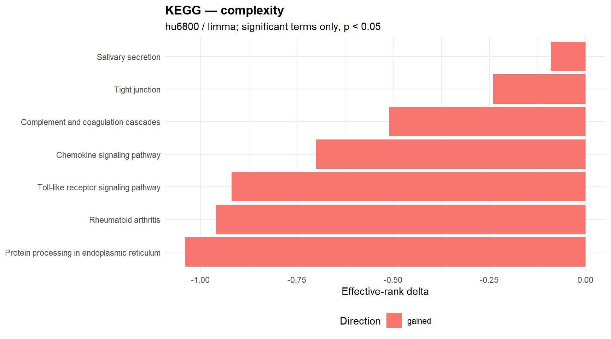
18.0.7.3.58 Entropy signal plot
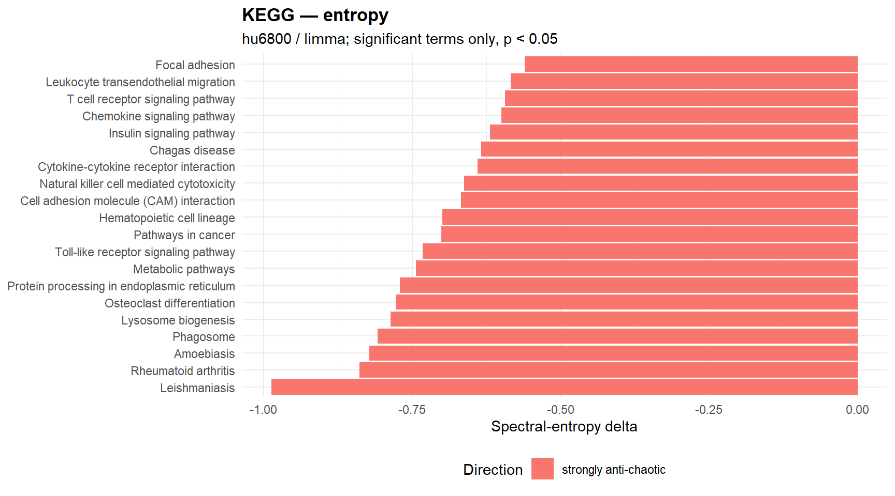
18.0.7.3.59 Significant complexity terms
| gene_set | semantic_block | n_shared_probes | effrank_delta | kappa_delta | direction | p_perm | status |
|---|---|---|---|---|---|---|---|
| Toll-like receptor signaling pathway | NA | 21 | -0.920 | 155.050 | gained | <0.001 | ok |
| Rheumatoid arthritis | NA | 28 | -0.960 | 155.060 | gained | 0.020 | ok |
| Salivary secretion | NA | 23 | -0.090 | 134.730 | gained | 0.020 | ok |
| Chemokine signaling pathway | NA | 39 | -0.700 | 75.740 | gained | 0.030 | ok |
| Complement and coagulation cascades | NA | 14 | -0.510 | 389.420 | gained | 0.030 | ok |
| Tight junction | NA | 20 | -0.240 | 156.980 | gained | 0.030 | ok |
| Protein processing in endoplasmic reticulum | NA | 21 | -1.040 | 190.470 | gained | 0.040 | ok |
18.0.7.3.60 Significant entropy terms
| gene_set | semantic_block | n_shared_probes | spectral_delta | shannon_delta | spectral_direction | p_perm_spectral | p_perm_shannon | status |
|---|---|---|---|---|---|---|---|---|
| Leishmaniasis | NA | 33 | -0.987 | 0.202 | strongly anti-chaotic | <0.001 | NA | ok |
| Rheumatoid arthritis | NA | 28 | -0.839 | 0.202 | strongly anti-chaotic | <0.001 | NA | ok |
| Amoebiasis | NA | 31 | -0.822 | 0.196 | strongly anti-chaotic | <0.001 | NA | ok |
| Phagosome | NA | 39 | -0.808 | 0.192 | strongly anti-chaotic | <0.001 | NA | ok |
| Lysosome biogenesis | NA | 40 | -0.786 | 0.197 | strongly anti-chaotic | <0.001 | NA | ok |
| Osteoclast differentiation | NA | 28 | -0.778 | 0.204 | strongly anti-chaotic | <0.001 | NA | ok |
| Protein processing in endoplasmic reticulum | NA | 21 | -0.771 | 0.192 | strongly anti-chaotic | <0.001 | NA | ok |
| Metabolic pathways | NA | 131 | -0.744 | 0.198 | strongly anti-chaotic | <0.001 | NA | ok |
| Toll-like receptor signaling pathway | NA | 21 | -0.732 | 0.207 | strongly anti-chaotic | <0.001 | NA | ok |
| Pathways in cancer | NA | 65 | -0.701 | 0.199 | strongly anti-chaotic | <0.001 | NA | ok |
| Hematopoietic cell lineage | NA | 24 | -0.699 | 0.196 | strongly anti-chaotic | <0.001 | NA | ok |
| Cell adhesion molecule (CAM) interaction | NA | 26 | -0.668 | 0.199 | strongly anti-chaotic | <0.001 | NA | ok |
| Natural killer cell mediated cytotoxicity | NA | 19 | -0.663 | 0.201 | strongly anti-chaotic | <0.001 | NA | ok |
| Cytokine-cytokine receptor interaction | NA | 39 | -0.640 | 0.205 | strongly anti-chaotic | <0.001 | NA | ok |
| Insulin signaling pathway | NA | 21 | -0.619 | 0.195 | strongly anti-chaotic | <0.001 | NA | ok |
| Chemokine signaling pathway | NA | 39 | -0.600 | 0.205 | strongly anti-chaotic | <0.001 | NA | ok |
| Leukocyte transendothelial migration | NA | 31 | -0.584 | 0.195 | strongly anti-chaotic | <0.001 | NA | ok |
| Focal adhesion | NA | 30 | -0.561 | 0.197 | strongly anti-chaotic | <0.001 | NA | ok |
| JAK-STAT signaling pathway | NA | 21 | -0.557 | 0.199 | strongly anti-chaotic | <0.001 | NA | ok |
| Neuroactive ligand-receptor interaction | NA | 34 | -0.549 | 0.194 | strongly anti-chaotic | <0.001 | NA | ok |
18.0.7.3.61 Terms significant in both engines
| gene_set | semantic_block | n_shared_probes | complexity_effrank_delta | complexity_direction | complexity_p_perm | entropy_spectral_delta | entropy_spectral_direction | entropy_p_perm_spectral | joint_rank_score |
|---|---|---|---|---|---|---|---|---|---|
| Toll-like receptor signaling pathway | NA | 21 | -0.920 | gained | <0.001 | -0.732 | strongly anti-chaotic | <0.001 | 615.305 |
| Rheumatoid arthritis | NA | 28 | -0.960 | gained | 0.020 | -0.839 | strongly anti-chaotic | <0.001 | 309.352 |
| Chemokine signaling pathway | NA | 39 | -0.700 | gained | 0.030 | -0.600 | strongly anti-chaotic | <0.001 | 309.176 |
| Tight junction | NA | 20 | -0.240 | gained | 0.030 | -0.273 | mildly anti-chaotic | <0.001 | 309.176 |
| Complement and coagulation cascades | NA | 14 | -0.510 | gained | 0.030 | -0.528 | strongly anti-chaotic | <0.001 | 309.176 |
| Protein processing in endoplasmic reticulum | NA | 21 | -1.040 | gained | 0.040 | -0.771 | strongly anti-chaotic | <0.001 | 309.051 |
Context summary
| engine | n_rows | n_gene_sets | n_significant_complexity | n_significant_entropy_spectral | median_shared_probes |
|---|---|---|---|---|---|
| complexity | 13 | 13 | 3 | 0 | 41.000 |
| entropy | 13 | 13 | 0 | 13 | 41.000 |
18.0.7.3.62 Complexity signal plot
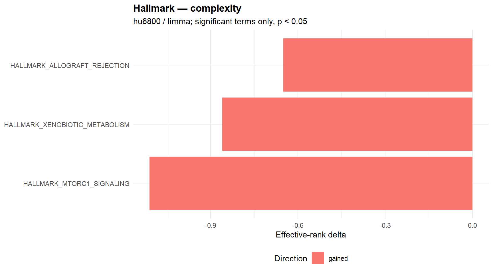
18.0.7.3.63 Entropy signal plot
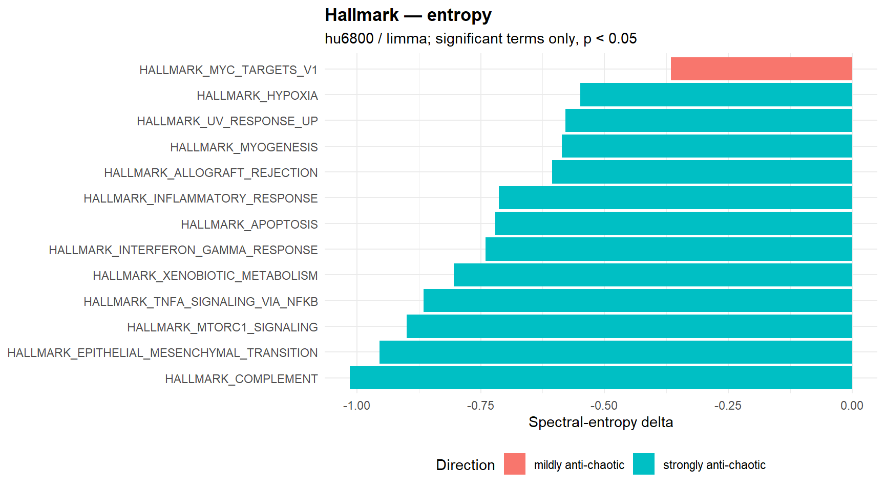
18.0.7.3.64 Significant complexity terms
| gene_set | semantic_block | n_shared_probes | effrank_delta | kappa_delta | direction | p_perm | status |
|---|---|---|---|---|---|---|---|
| HALLMARK_MTORC1_SIGNALING | NA | 40 | -1.110 | 113.940 | gained | <0.001 | ok |
| HALLMARK_XENOBIOTIC_METABOLISM | NA | 30 | -0.860 | 129.170 | gained | 0.040 | ok |
| HALLMARK_ALLOGRAFT_REJECTION | NA | 54 | -0.650 | 63.340 | gained | 0.040 | ok |
18.0.7.3.65 Significant entropy terms
| gene_set | semantic_block | n_shared_probes | spectral_delta | shannon_delta | spectral_direction | p_perm_spectral | p_perm_shannon | status |
|---|---|---|---|---|---|---|---|---|
| HALLMARK_COMPLEMENT | NA | 48 | -1.014 | 0.203 | strongly anti-chaotic | <0.001 | NA | ok |
| HALLMARK_EPITHELIAL_MESENCHYMAL_TRANSITION | NA | 32 | -0.954 | 0.200 | strongly anti-chaotic | <0.001 | NA | ok |
| HALLMARK_MTORC1_SIGNALING | NA | 40 | -0.900 | 0.199 | strongly anti-chaotic | <0.001 | NA | ok |
| HALLMARK_TNFA_SIGNALING_VIA_NFKB | NA | 52 | -0.865 | 0.206 | strongly anti-chaotic | <0.001 | NA | ok |
| HALLMARK_XENOBIOTIC_METABOLISM | NA | 30 | -0.804 | 0.197 | strongly anti-chaotic | <0.001 | NA | ok |
| HALLMARK_INTERFERON_GAMMA_RESPONSE | NA | 41 | -0.740 | 0.200 | strongly anti-chaotic | <0.001 | NA | ok |
| HALLMARK_APOPTOSIS | NA | 54 | -0.721 | 0.199 | strongly anti-chaotic | <0.001 | NA | ok |
| HALLMARK_INFLAMMATORY_RESPONSE | NA | 41 | -0.713 | 0.204 | strongly anti-chaotic | <0.001 | NA | ok |
| HALLMARK_ALLOGRAFT_REJECTION | NA | 54 | -0.606 | 0.192 | strongly anti-chaotic | <0.001 | NA | ok |
| HALLMARK_MYOGENESIS | NA | 39 | -0.586 | 0.199 | strongly anti-chaotic | <0.001 | NA | ok |
| HALLMARK_UV_RESPONSE_UP | NA | 35 | -0.579 | 0.200 | strongly anti-chaotic | <0.001 | NA | ok |
| HALLMARK_HYPOXIA | NA | 29 | -0.549 | 0.200 | strongly anti-chaotic | <0.001 | NA | ok |
| HALLMARK_MYC_TARGETS_V1 | NA | 58 | -0.366 | 0.189 | mildly anti-chaotic | 0.010 | NA | ok |
18.0.7.3.66 Terms significant in both engines
| gene_set | semantic_block | n_shared_probes | complexity_effrank_delta | complexity_direction | complexity_p_perm | entropy_spectral_delta | entropy_spectral_direction | entropy_p_perm_spectral | joint_rank_score |
|---|---|---|---|---|---|---|---|---|---|
| HALLMARK_MTORC1_SIGNALING | NA | 40 | -1.110 | gained | <0.001 | -0.900 | strongly anti-chaotic | <0.001 | 615.305 |
| HALLMARK_ALLOGRAFT_REJECTION | NA | 54 | -0.650 | gained | 0.040 | -0.606 | strongly anti-chaotic | <0.001 | 309.051 |
| HALLMARK_XENOBIOTIC_METABOLISM | NA | 30 | -0.860 | gained | 0.040 | -0.804 | strongly anti-chaotic | <0.001 | 309.051 |
Context summary
| engine | n_rows | n_gene_sets | n_significant_complexity | n_significant_entropy_spectral | median_shared_probes |
|---|---|---|---|---|---|
| complexity | 1548 | 1548 | 84 | 0 | 9.000 |
| entropy | 1548 | 1548 | 0 | 764 | 9.000 |
18.0.7.3.67 Complexity signal plot
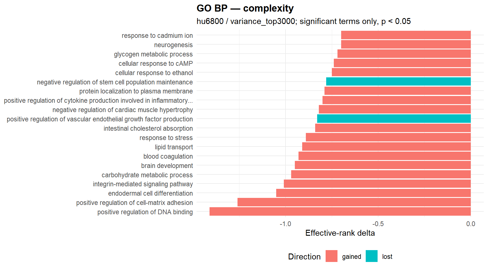
18.0.7.3.68 Entropy signal plot
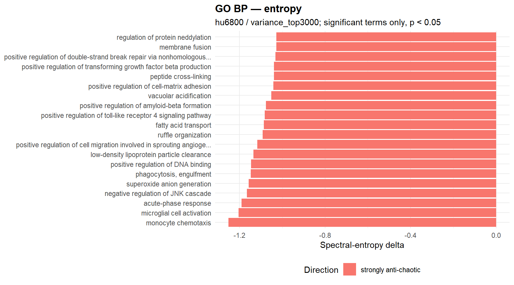
18.0.7.3.69 Significant complexity terms
| gene_set | semantic_block | n_shared_probes | effrank_delta | kappa_delta | direction | p_perm | status |
|---|---|---|---|---|---|---|---|
| blood coagulation | regulation of body fluid levels | 24 | -0.930 | 168.020 | gained | <0.001 | ok |
| positive regulation of cytokine production involved in inflammatory response | positive regulation of cytokine production | 9 | -0.800 | 18399.390 | gained | <0.001 | ok |
| positive regulation of protein targeting to membrane | regulation of cellular localization | 12 | -0.700 | 739.010 | gained | <0.001 | ok |
| positive regulation of translation | positive regulation of protein metabolic process | 21 | -0.430 | 153.170 | gained | <0.001 | ok |
| positive regulation of release of cytochrome c from mitochondria | mitochondrion organization | 12 | -0.430 | 1967.260 | gained | <0.001 | ok |
| positive regulation of mitotic nuclear division | organelle fission | 7 | 0.370 | -90678.790 | lost | <0.001 | ok |
| negative regulation of collagen biosynthetic process | negative regulation of biosynthetic process | 6 | -0.350 | -5487.480 | lost | <0.001 | ok |
| positive regulation of interleukin-12 production | positive regulation of cytokine production | 15 | -0.320 | 367.030 | gained | <0.001 | ok |
| regulation of signal transduction by p53 class mediator | regulation of intracellular signal transduction | 12 | -0.320 | 868.050 | gained | <0.001 | ok |
| positive regulation of cellular component organization | positive regulation of cellular component organization | 10 | -0.080 | 1552.220 | gained | <0.001 | ok |
| positive regulation of developmental process | positive regulation of developmental process | 7 | 0.040 | -57391.370 | lost | <0.001 | ok |
| positive regulation of MHC class II biosynthetic process | positive regulation of macromolecule biosynthetic process | 6 | 0.010 | -3458.060 | lost | <0.001 | ok |
| positive regulation of DNA binding | regulation of molecular function | 5 | -1.410 | 865.520 | gained | 0.010 | ok |
| integrin-mediated signaling pathway | cell surface receptor signaling pathway | 39 | -1.010 | 88.100 | gained | 0.010 | ok |
| negative regulation of stem cell population maintenance | negative regulation of developmental process | 6 | -0.780 | -2038.880 | lost | 0.010 | ok |
| negative regulation of cell adhesion | regulation of cell adhesion | 14 | -0.680 | 265.730 | gained | 0.010 | ok |
| positive regulation of cytoplasmic translation | positive regulation of protein metabolic process | 10 | -0.550 | 1263.200 | gained | 0.010 | ok |
| positive regulation of type I interferon production | positive regulation of cytokine production | 20 | -0.520 | 345.850 | gained | 0.010 | ok |
| monocyte activation | leukocyte activation | 7 | 0.390 | -19452.140 | lost | 0.010 | ok |
| positive regulation of translational initiation | positive regulation of protein metabolic process | 7 | -0.360 | -15522.180 | lost | 0.010 | ok |
18.0.7.3.70 Significant entropy terms
| gene_set | semantic_block | n_shared_probes | spectral_delta | shannon_delta | spectral_direction | p_perm_spectral | p_perm_shannon | status |
|---|---|---|---|---|---|---|---|---|
| monocyte chemotaxis | leukocyte migration | 9 | -1.251 | 0.183 | strongly anti-chaotic | <0.001 | NA | ok |
| microglial cell activation | inflammatory response | 8 | -1.204 | 0.194 | strongly anti-chaotic | <0.001 | NA | ok |
| acute-phase response | inflammatory response | 14 | -1.190 | 0.202 | strongly anti-chaotic | <0.001 | NA | ok |
| negative regulation of JNK cascade | negative regulation of intracellular signal transduction | 8 | -1.165 | 0.195 | strongly anti-chaotic | <0.001 | NA | ok |
| superoxide anion generation | biological_process | 7 | -1.157 | 0.192 | strongly anti-chaotic | <0.001 | NA | ok |
| phagocytosis, engulfment | endocytosis | 12 | -1.147 | 0.192 | strongly anti-chaotic | <0.001 | NA | ok |
| positive regulation of DNA binding | regulation of molecular function | 5 | -1.146 | 0.193 | strongly anti-chaotic | <0.001 | NA | ok |
| positive regulation of cell migration involved in sprouting angiogenesis | positive regulation of cell migration | 6 | -1.117 | 0.187 | strongly anti-chaotic | <0.001 | NA | ok |
| ruffle organization | plasma membrane bounded cell projection organization | 7 | -1.092 | 0.188 | strongly anti-chaotic | <0.001 | NA | ok |
| fatty acid transport | lipid transport | 12 | -1.086 | 0.214 | strongly anti-chaotic | <0.001 | NA | ok |
| positive regulation of toll-like receptor 4 signaling pathway | positive regulation of innate immune response | 7 | -1.082 | 0.194 | strongly anti-chaotic | <0.001 | NA | ok |
| positive regulation of amyloid-beta formation | positive regulation of protein metabolic process | 8 | -1.076 | 0.191 | strongly anti-chaotic | <0.001 | NA | ok |
| vacuolar acidification | monoatomic cation homeostasis | 8 | -1.051 | 0.193 | strongly anti-chaotic | <0.001 | NA | ok |
| positive regulation of cell-matrix adhesion | positive regulation of cell adhesion | 8 | -1.042 | 0.187 | strongly anti-chaotic | <0.001 | NA | ok |
| positive regulation of transforming growth factor beta production | positive regulation of cytokine production | 7 | -1.039 | 0.194 | strongly anti-chaotic | <0.001 | NA | ok |
| positive regulation of double-strand break repair via nonhomologous end joining | regulation of cellular response to stress | 5 | -1.032 | 0.189 | strongly anti-chaotic | <0.001 | NA | ok |
| membrane fusion | membrane organization | 7 | -1.028 | 0.200 | strongly anti-chaotic | <0.001 | NA | ok |
| positive regulation of heart rate | regulation of blood circulation | 5 | -1.021 | 0.192 | strongly anti-chaotic | <0.001 | NA | ok |
| collagen catabolic process | catabolic process | 11 | -1.021 | 0.199 | strongly anti-chaotic | <0.001 | NA | ok |
| mRNA catabolic process | mRNA catabolic process | 6 | -1.016 | 0.191 | strongly anti-chaotic | <0.001 | NA | ok |
18.0.7.3.71 Terms significant in both engines
| gene_set | semantic_block | n_shared_probes | complexity_effrank_delta | complexity_direction | complexity_p_perm | entropy_spectral_delta | entropy_spectral_direction | entropy_p_perm_spectral | joint_rank_score |
|---|---|---|---|---|---|---|---|---|---|
| positive regulation of interleukin-12 production | positive regulation of cytokine production | 15 | -0.320 | gained | <0.001 | -0.313 | mildly anti-chaotic | <0.001 | 615.305 |
| blood coagulation | regulation of body fluid levels | 24 | -0.930 | gained | <0.001 | -0.802 | strongly anti-chaotic | <0.001 | 615.305 |
| positive regulation of translation | positive regulation of protein metabolic process | 21 | -0.430 | gained | <0.001 | -0.445 | mildly anti-chaotic | <0.001 | 615.305 |
| positive regulation of protein targeting to membrane | regulation of cellular localization | 12 | -0.700 | gained | <0.001 | -0.637 | strongly anti-chaotic | <0.001 | 615.305 |
| regulation of signal transduction by p53 class mediator | regulation of intracellular signal transduction | 12 | -0.320 | gained | <0.001 | -0.370 | mildly anti-chaotic | <0.001 | 615.305 |
| negative regulation of cell adhesion | regulation of cell adhesion | 14 | -0.680 | gained | 0.010 | -0.629 | strongly anti-chaotic | <0.001 | 309.653 |
| integrin-mediated signaling pathway | cell surface receptor signaling pathway | 39 | -1.010 | gained | 0.010 | -0.778 | strongly anti-chaotic | <0.001 | 309.653 |
| positive regulation of type I interferon production | positive regulation of cytokine production | 20 | -0.520 | gained | 0.010 | -0.556 | strongly anti-chaotic | <0.001 | 309.653 |
| positive regulation of DNA binding | regulation of molecular function | 5 | -1.410 | gained | 0.010 | -1.146 | strongly anti-chaotic | <0.001 | 309.653 |
| positive regulation of cytoplasmic translation | positive regulation of protein metabolic process | 10 | -0.550 | gained | 0.010 | -0.566 | strongly anti-chaotic | <0.001 | 309.653 |
| negative regulation of cardiac muscle hypertrophy | muscle system process | 5 | -0.820 | gained | 0.020 | -0.821 | strongly anti-chaotic | <0.001 | 309.352 |
| neurogenesis | neurogenesis | 14 | -0.700 | gained | 0.020 | -0.614 | strongly anti-chaotic | <0.001 | 309.352 |
| cell projection organization | cell projection organization | 16 | -0.480 | gained | 0.020 | -0.470 | mildly anti-chaotic | <0.001 | 309.352 |
| endodermal cell differentiation | embryo development | 11 | -1.050 | gained | 0.020 | -0.912 | strongly anti-chaotic | <0.001 | 309.352 |
| cellular response to cAMP | cellular response to nitrogen compound | 13 | -0.740 | gained | 0.020 | -0.689 | strongly anti-chaotic | <0.001 | 309.352 |
| protein localization to plasma membrane | localization within membrane | 27 | -0.790 | gained | 0.020 | -0.727 | strongly anti-chaotic | <0.001 | 309.352 |
| positive regulation of cell-matrix adhesion | positive regulation of cell adhesion | 8 | -1.260 | gained | 0.030 | -1.042 | strongly anti-chaotic | <0.001 | 309.176 |
| RNA export from nucleus | nitrogen compound transport | 11 | -0.340 | gained | 0.030 | -0.379 | mildly anti-chaotic | <0.001 | 309.176 |
| glucose metabolic process | carbohydrate metabolic process | 24 | -0.310 | gained | 0.030 | -0.366 | mildly anti-chaotic | <0.001 | 309.176 |
| lipid transport | lipid transport | 28 | -0.910 | gained | 0.030 | -0.761 | strongly anti-chaotic | <0.001 | 309.176 |
18.0.7.3.72 GO semantic clusters
| semantic_cluster_id | semantic_block_name | n_rows | n_terms | n_sig_complexity | n_sig_entropy_spectral | mean_shared_probes |
|---|---|---|---|---|---|---|
| BP_GO_0001819_1 | positive regulation of cytokine production | 24 | 12 | 2 | 12 | 18.500 |
| BP_GO_1902533_1 | positive regulation of intracellular signal transduction | 16 | 8 | 1 | 7 | 25.250 |
| BP_GO_0019221_4 | cytokine-mediated signaling pathway | 18 | 9 | 0 | 7 | 11.000 |
| BP_GO_0007186_2 | G protein-coupled receptor signaling pathway | 16 | 8 | 2 | 5 | 28.375 |
| BP_GO_1902531_1 | regulation of intracellular signal transduction | 12 | 6 | 1 | 5 | 8.667 |
| BP_GO_0051247_3 | positive regulation of protein metabolic process | 6 | 3 | 3 | 3 | 12.667 |
| BP_GO_0007166_1 | cell surface receptor signaling pathway | 18 | 9 | 2 | 3 | 20.667 |
| BP_GO_0030099_1 | myeloid cell differentiation | 10 | 5 | 0 | 5 | 9.000 |
| BP_GO_0070647_1 | protein modification by small protein conjugation or removal | 10 | 5 | 0 | 5 | 22.200 |
| BP_GO_0006281_1 | DNA repair | 14 | 7 | 0 | 4 | 27.429 |
| BP_GO_0051241_1 | negative regulation of multicellular organismal process | 12 | 6 | 1 | 3 | 10.667 |
| BP_GO_0007169_1 | cell surface receptor protein tyrosine kinase signaling pathway | 10 | 5 | 0 | 4 | 15.200 |
| BP_GO_1902532_1 | negative regulation of intracellular signal transduction | 10 | 5 | 0 | 4 | 12.200 |
| BP_GO_0006066_6 | alcohol metabolic process | 8 | 4 | 0 | 4 | 11.750 |
| BP_GO_0006402_3 | mRNA catabolic process | 8 | 4 | 0 | 4 | 10.750 |
| BP_GO_0009968_1 | negative regulation of signal transduction | 8 | 4 | 0 | 4 | 8.500 |
| BP_GO_0030335_1 | positive regulation of cell migration | 8 | 4 | 0 | 4 | 11.500 |
| BP_GO_0035556_4 | intracellular signal transduction | 8 | 4 | 1 | 3 | 16.000 |
| BP_GO_0071363_6 | cellular response to growth factor stimulus | 8 | 4 | 0 | 4 | 14.000 |
| BP_GO_0001819_2 | positive regulation of cytokine production | 6 | 3 | 1 | 3 | 13.000 |
Context summary
| engine | n_rows | n_gene_sets | n_significant_complexity | n_significant_entropy_spectral | median_shared_probes |
|---|---|---|---|---|---|
| complexity | 548 | 548 | 28 | 0 | 10.000 |
| entropy | 548 | 548 | 0 | 303 | 10.000 |
18.0.7.3.73 Complexity signal plot
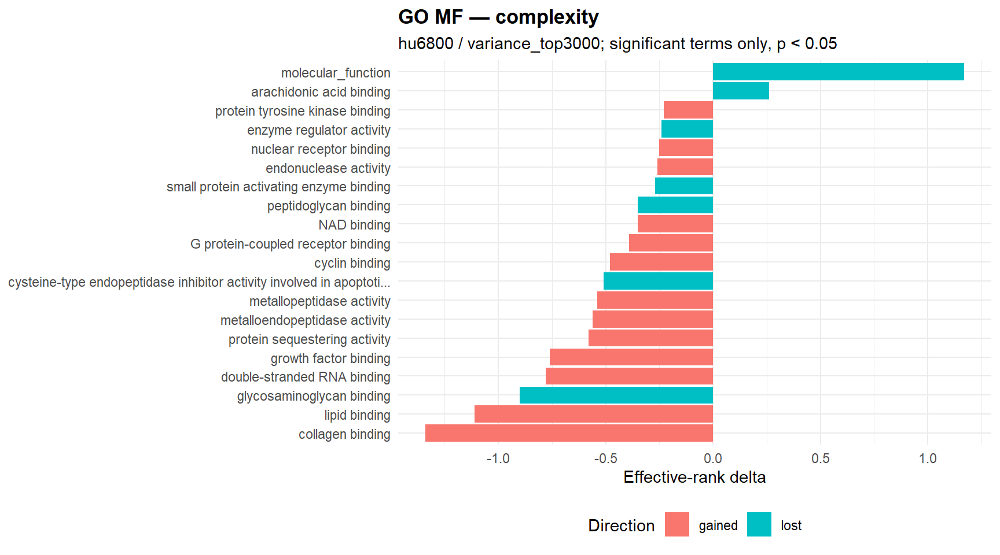
18.0.7.3.74 Entropy signal plot
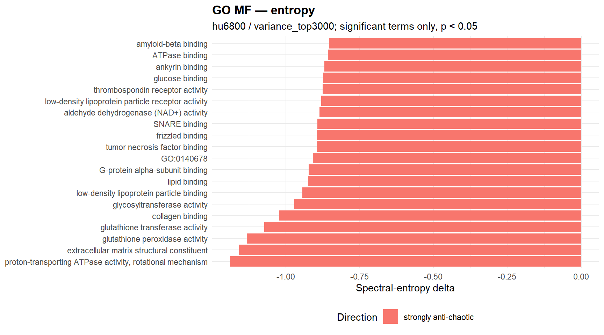
18.0.7.3.75 Significant complexity terms
| gene_set | semantic_block | n_shared_probes | effrank_delta | kappa_delta | direction | p_perm | status |
|---|---|---|---|---|---|---|---|
| lipid binding | lipid binding | 71 | -1.110 | 79.150 | gained | <0.001 | ok |
| metalloendopeptidase activity | peptidase activity | 21 | -0.560 | 159.500 | gained | <0.001 | ok |
| small protein activating enzyme binding | enzyme binding | 5 | -0.270 | -1655.150 | lost | <0.001 | ok |
| nuclear receptor binding | transcription factor binding | 13 | -0.250 | 455.770 | gained | <0.001 | ok |
| protein tyrosine kinase binding | enzyme binding | 15 | -0.230 | 416.840 | gained | <0.001 | ok |
| rRNA binding | RNA binding | 13 | -0.190 | 462.130 | gained | <0.001 | ok |
| phosphatase binding | enzyme binding | 6 | 0.190 | -2819.390 | lost | <0.001 | ok |
| molecular_function | molecular_function | 5 | 1.170 | -697.660 | lost | 0.010 | ok |
| double-stranded RNA binding | RNA binding | 20 | -0.780 | 151.360 | gained | 0.010 | ok |
| metallopeptidase activity | peptidase activity | 35 | -0.540 | 95.350 | gained | 0.010 | ok |
| G protein-coupled receptor binding | signaling receptor binding | 15 | -0.390 | 298.310 | gained | 0.010 | ok |
| peptidoglycan binding | carbohydrate derivative binding | 5 | -0.350 | -352.730 | lost | 0.010 | ok |
| NAD binding | heterocyclic compound binding | 18 | -0.350 | 494.250 | gained | 0.010 | ok |
| insulin receptor substrate binding | protein binding | 7 | -0.090 | -105720.500 | lost | 0.010 | ok |
| glycosaminoglycan binding | carbohydrate derivative binding | 6 | -0.900 | -801.460 | lost | 0.020 | ok |
| protein sequestering activity | molecular_function | 23 | -0.580 | 274.140 | gained | 0.020 | ok |
| cyclin binding | protein binding | 12 | -0.480 | 553.130 | gained | 0.020 | ok |
| arachidonic acid binding | lipid binding | 5 | 0.260 | -433.560 | lost | 0.020 | ok |
| protein kinase A regulatory subunit binding | protein binding | 7 | -0.130 | -26939.550 | lost | 0.020 | ok |
| transcription coregulator binding | transcription factor binding | 24 | -0.110 | 76.880 | gained | 0.020 | ok |
18.0.7.3.76 Significant entropy terms
| gene_set | semantic_block | n_shared_probes | spectral_delta | shannon_delta | spectral_direction | p_perm_spectral | p_perm_shannon | status |
|---|---|---|---|---|---|---|---|---|
| proton-transporting ATPase activity, rotational mechanism | active transmembrane transporter activity | 8 | -1.190 | 0.189 | strongly anti-chaotic | <0.001 | NA | ok |
| extracellular matrix structural constituent | molecular_function | 26 | -1.159 | 0.195 | strongly anti-chaotic | <0.001 | NA | ok |
| glutathione peroxidase activity | oxidoreductase activity | 9 | -1.133 | 0.191 | strongly anti-chaotic | <0.001 | NA | ok |
| glutathione transferase activity | transferase activity | 7 | -1.073 | 0.193 | strongly anti-chaotic | <0.001 | NA | ok |
| collagen binding | protein-containing complex binding | 21 | -1.024 | 0.199 | strongly anti-chaotic | <0.001 | NA | ok |
| glycosyltransferase activity | transferase activity | 23 | -0.971 | 0.192 | strongly anti-chaotic | <0.001 | NA | ok |
| low-density lipoprotein particle binding | protein-containing complex binding | 9 | -0.944 | 0.204 | strongly anti-chaotic | <0.001 | NA | ok |
| lipid binding | lipid binding | 71 | -0.925 | 0.193 | strongly anti-chaotic | <0.001 | NA | ok |
| G-protein alpha-subunit binding | protein binding | 10 | -0.923 | 0.205 | strongly anti-chaotic | <0.001 | NA | ok |
| GO:0140678 | molecular function regulator activity | 11 | -0.909 | 0.190 | strongly anti-chaotic | <0.001 | NA | ok |
| tumor necrosis factor binding | protein binding | 5 | -0.896 | 0.212 | strongly anti-chaotic | <0.001 | NA | ok |
| SNARE binding | protein binding | 7 | -0.894 | 0.195 | strongly anti-chaotic | <0.001 | NA | ok |
| aldehyde dehydrogenase (NAD+) activity | oxidoreductase activity | 6 | -0.886 | 0.192 | strongly anti-chaotic | <0.001 | NA | ok |
| low-density lipoprotein particle receptor activity | molecular_function | 8 | -0.881 | 0.205 | strongly anti-chaotic | <0.001 | NA | ok |
| thrombospondin receptor activity | signaling receptor activity | 6 | -0.876 | 0.198 | strongly anti-chaotic | <0.001 | NA | ok |
| ankyrin binding | cytoskeletal protein binding | 5 | -0.870 | 0.193 | strongly anti-chaotic | <0.001 | NA | ok |
| ATPase binding | enzyme binding | 14 | -0.858 | 0.192 | strongly anti-chaotic | <0.001 | NA | ok |
| amyloid-beta binding | binding | 32 | -0.854 | 0.197 | strongly anti-chaotic | <0.001 | NA | ok |
| acyltransferase activity, transferring groups other than amino-acyl groups | acyltransferase activity | 8 | -0.841 | 0.193 | strongly anti-chaotic | <0.001 | NA | ok |
| acyltransferase activity | acyltransferase activity | 25 | -0.841 | 0.195 | strongly anti-chaotic | <0.001 | NA | ok |
18.0.7.3.77 Terms significant in both engines
| gene_set | semantic_block | n_shared_probes | complexity_effrank_delta | complexity_direction | complexity_p_perm | entropy_spectral_delta | entropy_spectral_direction | entropy_p_perm_spectral | joint_rank_score |
|---|---|---|---|---|---|---|---|---|---|
| metalloendopeptidase activity | peptidase activity | 21 | -0.560 | gained | <0.001 | -0.473 | mildly anti-chaotic | <0.001 | 615.305 |
| lipid binding | lipid binding | 71 | -1.110 | gained | <0.001 | -0.925 | strongly anti-chaotic | <0.001 | 615.305 |
| protein tyrosine kinase binding | enzyme binding | 15 | -0.230 | gained | <0.001 | -0.269 | mildly anti-chaotic | <0.001 | 615.305 |
| double-stranded RNA binding | RNA binding | 20 | -0.780 | gained | 0.010 | -0.703 | strongly anti-chaotic | <0.001 | 309.653 |
| metallopeptidase activity | peptidase activity | 35 | -0.540 | gained | 0.010 | -0.471 | mildly anti-chaotic | <0.001 | 309.653 |
| NAD binding | heterocyclic compound binding | 18 | -0.350 | gained | 0.010 | -0.396 | mildly anti-chaotic | <0.001 | 309.653 |
| cyclin binding | protein binding | 12 | -0.480 | gained | 0.020 | -0.502 | strongly anti-chaotic | <0.001 | 309.352 |
| protein sequestering activity | molecular_function | 23 | -0.580 | gained | 0.020 | -0.554 | strongly anti-chaotic | <0.001 | 309.352 |
| collagen binding | protein-containing complex binding | 21 | -1.340 | gained | 0.030 | -1.024 | strongly anti-chaotic | <0.001 | 309.176 |
| rRNA binding | RNA binding | 13 | -0.190 | gained | <0.001 | -0.222 | mildly anti-chaotic | 0.030 | 309.176 |
| glycosaminoglycan binding | carbohydrate derivative binding | 6 | -0.900 | lost | 0.020 | -0.774 | strongly anti-chaotic | 0.010 | 3.699 |
| enzyme regulator activity | enzyme regulator activity | 6 | -0.240 | lost | 0.040 | -0.267 | mildly anti-chaotic | 0.020 | 3.097 |
18.0.7.3.78 GO semantic clusters
| semantic_cluster_id | semantic_block_name | n_rows | n_terms | n_sig_complexity | n_sig_entropy_spectral | mean_shared_probes |
|---|---|---|---|---|---|---|
| MF_GO_0003723_1 | RNA binding | 16 | 8 | 1 | 5 | 66.500 |
| MF_GO_0030234_5 | enzyme regulator activity | 14 | 7 | 1 | 5 | 13.714 |
| MF_GO_0098772_3 | molecular function regulator activity | 12 | 6 | 0 | 5 | 28.667 |
| MF_GO_0004672_1 | protein kinase activity | 10 | 5 | 0 | 5 | 42.400 |
| MF_GO_0004674_1 | protein serine/threonine kinase activity | 12 | 6 | 0 | 4 | 23.333 |
| MF_GO_0019899_3 | enzyme binding | 10 | 5 | 0 | 4 | 40.400 |
| MF_GO_0042578_7 | phosphoric ester hydrolase activity | 10 | 5 | 0 | 4 | 18.200 |
| MF_GO_0008134_2 | transcription factor binding | 8 | 4 | 1 | 3 | 19.000 |
| MF_GO_0008233_1 | peptidase activity | 8 | 4 | 0 | 4 | 44.500 |
| MF_GO_1901363_1 | heterocyclic compound binding | 6 | 3 | 1 | 3 | 152.667 |
| MF_GO_0008233_6 | peptidase activity | 4 | 2 | 2 | 2 | 28.000 |
| MF_GO_0003677_5 | DNA binding | 8 | 4 | 0 | 3 | 123.250 |
| MF_GO_0003723_4 | RNA binding | 6 | 3 | 0 | 3 | 32.667 |
| MF_GO_0005515_28 | protein binding | 6 | 3 | 0 | 3 | 17.000 |
| MF_GO_0019899_4 | enzyme binding | 6 | 3 | 2 | 1 | 14.333 |
| MF_GO_0036094_5 | small molecule binding | 6 | 3 | 0 | 3 | 12.667 |
| MF_GO_0043169_1 | cation binding | 6 | 3 | 0 | 3 | 250.333 |
| MF_GO_0097367_3 | carbohydrate derivative binding | 6 | 3 | 2 | 1 | 5.667 |
| MF_GO_0044877_5 | protein-containing complex binding | 4 | 2 | 1 | 2 | 72.000 |
| MF_molecular_function_38 | molecular_function | 4 | 2 | 1 | 2 | 14.500 |
Context summary
| engine | n_rows | n_gene_sets | n_significant_complexity | n_significant_entropy_spectral | median_shared_probes |
|---|---|---|---|---|---|
| complexity | 57 | 57 | 2 | 0 | 46.000 |
| entropy | 57 | 57 | 0 | 51 | 46.000 |
18.0.7.3.79 Complexity signal plot
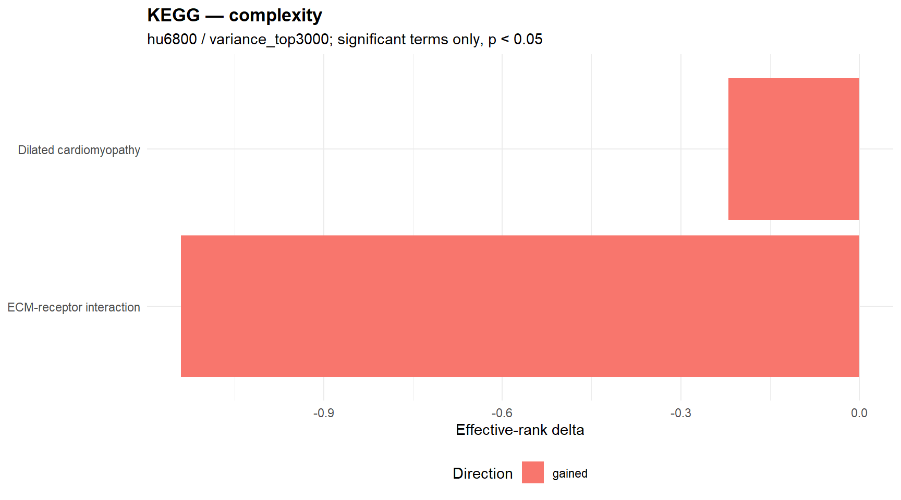
18.0.7.3.80 Entropy signal plot
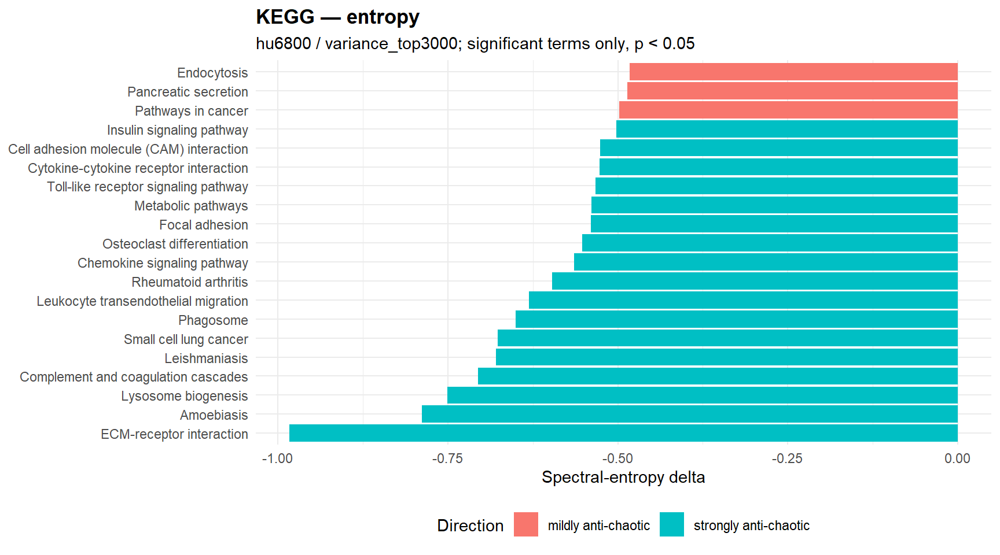
18.0.7.3.81 Significant complexity terms
| gene_set | semantic_block | n_shared_probes | effrank_delta | kappa_delta | direction | p_perm | status |
|---|---|---|---|---|---|---|---|
| ECM-receptor interaction | NA | 24 | -1.140 | 249.530 | gained | 0.010 | ok |
| Dilated cardiomyopathy | NA | 35 | -0.220 | 86.460 | gained | 0.020 | ok |
18.0.7.3.82 Significant entropy terms
| gene_set | semantic_block | n_shared_probes | spectral_delta | shannon_delta | spectral_direction | p_perm_spectral | p_perm_shannon | status |
|---|---|---|---|---|---|---|---|---|
| ECM-receptor interaction | NA | 24 | -0.983 | 0.196 | strongly anti-chaotic | <0.001 | NA | ok |
| Amoebiasis | NA | 44 | -0.788 | 0.197 | strongly anti-chaotic | <0.001 | NA | ok |
| Lysosome biogenesis | NA | 45 | -0.751 | 0.202 | strongly anti-chaotic | <0.001 | NA | ok |
| Complement and coagulation cascades | NA | 24 | -0.706 | 0.202 | strongly anti-chaotic | <0.001 | NA | ok |
| Leishmaniasis | NA | 53 | -0.679 | 0.189 | strongly anti-chaotic | <0.001 | NA | ok |
| Small cell lung cancer | NA | 38 | -0.677 | 0.197 | strongly anti-chaotic | <0.001 | NA | ok |
| Phagosome | NA | 77 | -0.650 | 0.189 | strongly anti-chaotic | <0.001 | NA | ok |
| Leukocyte transendothelial migration | NA | 59 | -0.631 | 0.192 | strongly anti-chaotic | <0.001 | NA | ok |
| Rheumatoid arthritis | NA | 46 | -0.597 | 0.193 | strongly anti-chaotic | <0.001 | NA | ok |
| Chemokine signaling pathway | NA | 64 | -0.564 | 0.197 | strongly anti-chaotic | <0.001 | NA | ok |
| Osteoclast differentiation | NA | 54 | -0.552 | 0.197 | strongly anti-chaotic | <0.001 | NA | ok |
| Focal adhesion | NA | 72 | -0.540 | 0.193 | strongly anti-chaotic | <0.001 | NA | ok |
| Metabolic pathways | NA | 310 | -0.539 | 0.194 | strongly anti-chaotic | <0.001 | NA | ok |
| Toll-like receptor signaling pathway | NA | 43 | -0.533 | 0.199 | strongly anti-chaotic | <0.001 | NA | ok |
| Cytokine-cytokine receptor interaction | NA | 66 | -0.527 | 0.198 | strongly anti-chaotic | <0.001 | NA | ok |
| Cell adhesion molecule (CAM) interaction | NA | 55 | -0.526 | 0.191 | strongly anti-chaotic | <0.001 | NA | ok |
| Insulin signaling pathway | NA | 41 | -0.502 | 0.195 | strongly anti-chaotic | <0.001 | NA | ok |
| Pathways in cancer | NA | 128 | -0.498 | 0.196 | mildly anti-chaotic | <0.001 | NA | ok |
| Pancreatic secretion | NA | 36 | -0.486 | 0.191 | mildly anti-chaotic | <0.001 | NA | ok |
| Endocytosis | NA | 49 | -0.483 | 0.197 | mildly anti-chaotic | <0.001 | NA | ok |
18.0.7.3.83 Terms significant in both engines
| gene_set | semantic_block | n_shared_probes | complexity_effrank_delta | complexity_direction | complexity_p_perm | entropy_spectral_delta | entropy_spectral_direction | entropy_p_perm_spectral | joint_rank_score |
|---|---|---|---|---|---|---|---|---|---|
| ECM-receptor interaction | NA | 24 | -1.140 | gained | 0.010 | -0.983 | strongly anti-chaotic | <0.001 | 309.653 |
| Dilated cardiomyopathy | NA | 35 | -0.220 | gained | 0.020 | -0.263 | mildly anti-chaotic | <0.001 | 309.352 |
Context summary
| engine | n_rows | n_gene_sets | n_significant_complexity | n_significant_entropy_spectral | median_shared_probes |
|---|---|---|---|---|---|
| complexity | 13 | 13 | 1 | 0 | 85.000 |
| entropy | 13 | 13 | 0 | 13 | 85.000 |
18.0.7.3.84 Complexity signal plot
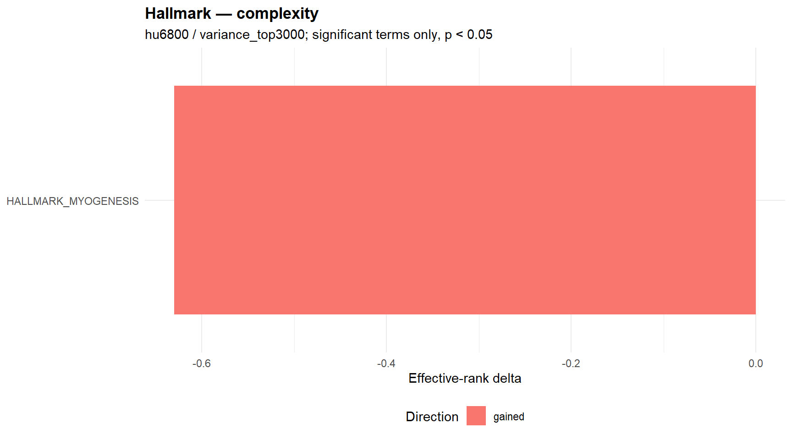
18.0.7.3.85 Entropy signal plot
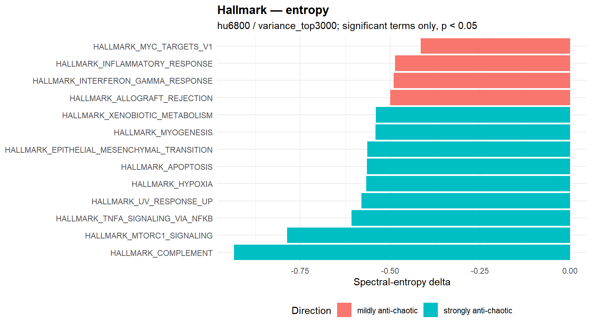
18.0.7.3.86 Significant complexity terms
| gene_set | semantic_block | n_shared_probes | effrank_delta | kappa_delta | direction | p_perm | status |
|---|---|---|---|---|---|---|---|
| HALLMARK_MYOGENESIS | NA | 69 | -0.630 | 65.460 | gained | <0.001 | ok |
18.0.7.3.87 Significant entropy terms
| gene_set | semantic_block | n_shared_probes | spectral_delta | shannon_delta | spectral_direction | p_perm_spectral | p_perm_shannon | status |
|---|---|---|---|---|---|---|---|---|
| HALLMARK_COMPLEMENT | NA | 85 | -0.934 | 0.202 | strongly anti-chaotic | <0.001 | NA | ok |
| HALLMARK_MTORC1_SIGNALING | NA | 107 | -0.787 | 0.195 | strongly anti-chaotic | <0.001 | NA | ok |
| HALLMARK_TNFA_SIGNALING_VIA_NFKB | NA | 91 | -0.608 | 0.201 | strongly anti-chaotic | <0.001 | NA | ok |
| HALLMARK_UV_RESPONSE_UP | NA | 71 | -0.580 | 0.198 | strongly anti-chaotic | <0.001 | NA | ok |
| HALLMARK_HYPOXIA | NA | 78 | -0.567 | 0.198 | strongly anti-chaotic | <0.001 | NA | ok |
| HALLMARK_APOPTOSIS | NA | 92 | -0.565 | 0.198 | strongly anti-chaotic | <0.001 | NA | ok |
| HALLMARK_EPITHELIAL_MESENCHYMAL_TRANSITION | NA | 68 | -0.564 | 0.198 | strongly anti-chaotic | <0.001 | NA | ok |
| HALLMARK_MYOGENESIS | NA | 69 | -0.541 | 0.196 | strongly anti-chaotic | <0.001 | NA | ok |
| HALLMARK_XENOBIOTIC_METABOLISM | NA | 72 | -0.540 | 0.196 | strongly anti-chaotic | <0.001 | NA | ok |
| HALLMARK_ALLOGRAFT_REJECTION | NA | 108 | -0.500 | 0.191 | mildly anti-chaotic | <0.001 | NA | ok |
| HALLMARK_INTERFERON_GAMMA_RESPONSE | NA | 89 | -0.490 | 0.196 | mildly anti-chaotic | <0.001 | NA | ok |
| HALLMARK_INFLAMMATORY_RESPONSE | NA | 76 | -0.487 | 0.200 | mildly anti-chaotic | <0.001 | NA | ok |
| HALLMARK_MYC_TARGETS_V1 | NA | 153 | -0.415 | 0.191 | mildly anti-chaotic | <0.001 | NA | ok |
18.0.7.3.88 Terms significant in both engines
| gene_set | semantic_block | n_shared_probes | complexity_effrank_delta | complexity_direction | complexity_p_perm | entropy_spectral_delta | entropy_spectral_direction | entropy_p_perm_spectral | joint_rank_score |
|---|---|---|---|---|---|---|---|---|---|
| HALLMARK_MYOGENESIS | NA | 69 | -0.630 | gained | <0.001 | -0.541 | strongly anti-chaotic | <0.001 | 615.305 |
18.0.7.4 Skipped / inadmissible gene sets
These counts summarize chip-level gene-set admissibility failures. They are not interpreted as repeated comparison-level biological results.
| comparison | chip | filter_regime | gene_set_mode | engine | reason | n_skipped |
|---|---|---|---|---|---|---|
| PB/B-ALL | hu35ksuba | limma | GO_BP | complexity | usable gene-set probes below biological admissibility threshold: 0 < 5 | 417 |
| PB/B-ALL | hu35ksuba | limma | GO_BP | complexity | usable gene-set probes below biological admissibility threshold: 1 < 5 | 481 |
| PB/B-ALL | hu35ksuba | limma | GO_BP | complexity | usable gene-set probes below biological admissibility threshold: 2 < 5 | 416 |
| PB/B-ALL | hu35ksuba | limma | GO_BP | complexity | usable gene-set probes below biological admissibility threshold: 3 < 5 | 268 |
| PB/B-ALL | hu35ksuba | limma | GO_BP | complexity | usable gene-set probes below biological admissibility threshold: 4 < 5 | 195 |
| PB/B-ALL | hu35ksuba | limma | GO_BP | entropy | usable gene-set probes below biological admissibility threshold: 0 < 5 | 417 |
| PB/B-ALL | hu35ksuba | limma | GO_BP | entropy | usable gene-set probes below biological admissibility threshold: 1 < 5 | 481 |
| PB/B-ALL | hu35ksuba | limma | GO_BP | entropy | usable gene-set probes below biological admissibility threshold: 2 < 5 | 416 |
| PB/B-ALL | hu35ksuba | limma | GO_BP | entropy | usable gene-set probes below biological admissibility threshold: 3 < 5 | 268 |
| PB/B-ALL | hu35ksuba | limma | GO_BP | entropy | usable gene-set probes below biological admissibility threshold: 4 < 5 | 195 |
| PB/B-ALL | hu35ksuba | limma | GO_MF | complexity | usable gene-set probes below biological admissibility threshold: 0 < 5 | 130 |
| PB/B-ALL | hu35ksuba | limma | GO_MF | complexity | usable gene-set probes below biological admissibility threshold: 1 < 5 | 185 |
| PB/B-ALL | hu35ksuba | limma | GO_MF | complexity | usable gene-set probes below biological admissibility threshold: 2 < 5 | 123 |
| PB/B-ALL | hu35ksuba | limma | GO_MF | complexity | usable gene-set probes below biological admissibility threshold: 3 < 5 | 95 |
| PB/B-ALL | hu35ksuba | limma | GO_MF | complexity | usable gene-set probes below biological admissibility threshold: 4 < 5 | 55 |
| PB/B-ALL | hu35ksuba | limma | GO_MF | entropy | usable gene-set probes below biological admissibility threshold: 0 < 5 | 130 |
| PB/B-ALL | hu35ksuba | limma | GO_MF | entropy | usable gene-set probes below biological admissibility threshold: 1 < 5 | 185 |
| PB/B-ALL | hu35ksuba | limma | GO_MF | entropy | usable gene-set probes below biological admissibility threshold: 2 < 5 | 123 |
| PB/B-ALL | hu35ksuba | limma | GO_MF | entropy | usable gene-set probes below biological admissibility threshold: 3 < 5 | 95 |
| PB/B-ALL | hu35ksuba | limma | GO_MF | entropy | usable gene-set probes below biological admissibility threshold: 4 < 5 | 55 |
| PB/B-ALL | hu35ksuba | limma | KEGG | complexity | usable gene-set probes below biological admissibility threshold: 2 < 10 | 2 |
| PB/B-ALL | hu35ksuba | limma | KEGG | complexity | usable gene-set probes below biological admissibility threshold: 3 < 10 | 5 |
| PB/B-ALL | hu35ksuba | limma | KEGG | complexity | usable gene-set probes below biological admissibility threshold: 4 < 10 | 3 |
| PB/B-ALL | hu35ksuba | limma | KEGG | complexity | usable gene-set probes below biological admissibility threshold: 5 < 10 | 2 |
| PB/B-ALL | hu35ksuba | limma | KEGG | complexity | usable gene-set probes below biological admissibility threshold: 6 < 10 | 2 |
| PB/B-ALL | hu35ksuba | limma | KEGG | complexity | usable gene-set probes below biological admissibility threshold: 7 < 10 | 10 |
| PB/B-ALL | hu35ksuba | limma | KEGG | complexity | usable gene-set probes below biological admissibility threshold: 8 < 10 | 5 |
| PB/B-ALL | hu35ksuba | limma | KEGG | complexity | usable gene-set probes below biological admissibility threshold: 9 < 10 | 3 |
| PB/B-ALL | hu35ksuba | limma | KEGG | entropy | usable gene-set probes below biological admissibility threshold: 2 < 10 | 2 |
| PB/B-ALL | hu35ksuba | limma | KEGG | entropy | usable gene-set probes below biological admissibility threshold: 3 < 10 | 5 |
| PB/B-ALL | hu35ksuba | limma | KEGG | entropy | usable gene-set probes below biological admissibility threshold: 4 < 10 | 3 |
| PB/B-ALL | hu35ksuba | limma | KEGG | entropy | usable gene-set probes below biological admissibility threshold: 5 < 10 | 2 |
| PB/B-ALL | hu35ksuba | limma | KEGG | entropy | usable gene-set probes below biological admissibility threshold: 6 < 10 | 2 |
| PB/B-ALL | hu35ksuba | limma | KEGG | entropy | usable gene-set probes below biological admissibility threshold: 7 < 10 | 10 |
| PB/B-ALL | hu35ksuba | limma | KEGG | entropy | usable gene-set probes below biological admissibility threshold: 8 < 10 | 5 |
| PB/B-ALL | hu35ksuba | limma | KEGG | entropy | usable gene-set probes below biological admissibility threshold: 9 < 10 | 3 |
| PB/B-ALL | hu35ksuba | variance_top3000 | GO_BP | complexity | usable gene-set probes below biological admissibility threshold: 0 < 5 | 68 |
| PB/B-ALL | hu35ksuba | variance_top3000 | GO_BP | complexity | usable gene-set probes below biological admissibility threshold: 1 < 5 | 167 |
| PB/B-ALL | hu35ksuba | variance_top3000 | GO_BP | complexity | usable gene-set probes below biological admissibility threshold: 2 < 5 | 282 |
| PB/B-ALL | hu35ksuba | variance_top3000 | GO_BP | complexity | usable gene-set probes below biological admissibility threshold: 3 < 5 | 348 |
| PB/B-ALL | hu35ksuba | variance_top3000 | GO_BP | complexity | usable gene-set probes below biological admissibility threshold: 4 < 5 | 301 |
| PB/B-ALL | hu35ksuba | variance_top3000 | GO_BP | entropy | usable gene-set probes below biological admissibility threshold: 0 < 5 | 68 |
| PB/B-ALL | hu35ksuba | variance_top3000 | GO_BP | entropy | usable gene-set probes below biological admissibility threshold: 1 < 5 | 167 |
| PB/B-ALL | hu35ksuba | variance_top3000 | GO_BP | entropy | usable gene-set probes below biological admissibility threshold: 2 < 5 | 282 |
| PB/B-ALL | hu35ksuba | variance_top3000 | GO_BP | entropy | usable gene-set probes below biological admissibility threshold: 3 < 5 | 348 |
| PB/B-ALL | hu35ksuba | variance_top3000 | GO_BP | entropy | usable gene-set probes below biological admissibility threshold: 4 < 5 | 301 |
| PB/B-ALL | hu35ksuba | variance_top3000 | GO_MF | complexity | usable gene-set probes below biological admissibility threshold: 0 < 5 | 27 |
| PB/B-ALL | hu35ksuba | variance_top3000 | GO_MF | complexity | usable gene-set probes below biological admissibility threshold: 1 < 5 | 58 |
| PB/B-ALL | hu35ksuba | variance_top3000 | GO_MF | complexity | usable gene-set probes below biological admissibility threshold: 2 < 5 | 107 |
| PB/B-ALL | hu35ksuba | variance_top3000 | GO_MF | complexity | usable gene-set probes below biological admissibility threshold: 3 < 5 | 100 |
| PB/B-ALL | hu35ksuba | variance_top3000 | GO_MF | complexity | usable gene-set probes below biological admissibility threshold: 4 < 5 | 109 |
| PB/B-ALL | hu35ksuba | variance_top3000 | GO_MF | entropy | usable gene-set probes below biological admissibility threshold: 0 < 5 | 27 |
| PB/B-ALL | hu35ksuba | variance_top3000 | GO_MF | entropy | usable gene-set probes below biological admissibility threshold: 1 < 5 | 58 |
| PB/B-ALL | hu35ksuba | variance_top3000 | GO_MF | entropy | usable gene-set probes below biological admissibility threshold: 2 < 5 | 107 |
| PB/B-ALL | hu35ksuba | variance_top3000 | GO_MF | entropy | usable gene-set probes below biological admissibility threshold: 3 < 5 | 100 |
| PB/B-ALL | hu35ksuba | variance_top3000 | GO_MF | entropy | usable gene-set probes below biological admissibility threshold: 4 < 5 | 109 |
| PB/B-ALL | hu35ksuba | variance_top3000 | KEGG | complexity | usable gene-set probes below biological admissibility threshold: 7 < 10 | 1 |
| PB/B-ALL | hu35ksuba | variance_top3000 | KEGG | complexity | usable gene-set probes below biological admissibility threshold: 8 < 10 | 1 |
| PB/B-ALL | hu35ksuba | variance_top3000 | KEGG | complexity | usable gene-set probes below biological admissibility threshold: 9 < 10 | 1 |
| PB/B-ALL | hu35ksuba | variance_top3000 | KEGG | entropy | usable gene-set probes below biological admissibility threshold: 7 < 10 | 1 |
| PB/B-ALL | hu35ksuba | variance_top3000 | KEGG | entropy | usable gene-set probes below biological admissibility threshold: 8 < 10 | 1 |
| PB/B-ALL | hu35ksuba | variance_top3000 | KEGG | entropy | usable gene-set probes below biological admissibility threshold: 9 < 10 | 1 |
| PB/B-ALL | hu6800 | limma | GO_BP | complexity | usable gene-set probes below biological admissibility threshold: 0 < 5 | 243 |
| PB/B-ALL | hu6800 | limma | GO_BP | complexity | usable gene-set probes below biological admissibility threshold: 1 < 5 | 466 |
| PB/B-ALL | hu6800 | limma | GO_BP | complexity | usable gene-set probes below biological admissibility threshold: 2 < 5 | 422 |
| PB/B-ALL | hu6800 | limma | GO_BP | complexity | usable gene-set probes below biological admissibility threshold: 3 < 5 | 379 |
| PB/B-ALL | hu6800 | limma | GO_BP | complexity | usable gene-set probes below biological admissibility threshold: 4 < 5 | 237 |
| PB/B-ALL | hu6800 | limma | GO_BP | entropy | usable gene-set probes below biological admissibility threshold: 0 < 5 | 243 |
| PB/B-ALL | hu6800 | limma | GO_BP | entropy | usable gene-set probes below biological admissibility threshold: 1 < 5 | 466 |
| PB/B-ALL | hu6800 | limma | GO_BP | entropy | usable gene-set probes below biological admissibility threshold: 2 < 5 | 422 |
| PB/B-ALL | hu6800 | limma | GO_BP | entropy | usable gene-set probes below biological admissibility threshold: 3 < 5 | 379 |
| PB/B-ALL | hu6800 | limma | GO_BP | entropy | usable gene-set probes below biological admissibility threshold: 4 < 5 | 237 |
| PB/B-ALL | hu6800 | limma | GO_MF | complexity | usable gene-set probes below biological admissibility threshold: 0 < 5 | 84 |
| PB/B-ALL | hu6800 | limma | GO_MF | complexity | usable gene-set probes below biological admissibility threshold: 1 < 5 | 161 |
| PB/B-ALL | hu6800 | limma | GO_MF | complexity | usable gene-set probes below biological admissibility threshold: 2 < 5 | 158 |
| PB/B-ALL | hu6800 | limma | GO_MF | complexity | usable gene-set probes below biological admissibility threshold: 3 < 5 | 116 |
| PB/B-ALL | hu6800 | limma | GO_MF | complexity | usable gene-set probes below biological admissibility threshold: 4 < 5 | 71 |
| PB/B-ALL | hu6800 | limma | GO_MF | entropy | usable gene-set probes below biological admissibility threshold: 0 < 5 | 84 |
| PB/B-ALL | hu6800 | limma | GO_MF | entropy | usable gene-set probes below biological admissibility threshold: 1 < 5 | 161 |
| PB/B-ALL | hu6800 | limma | GO_MF | entropy | usable gene-set probes below biological admissibility threshold: 2 < 5 | 158 |
| PB/B-ALL | hu6800 | limma | GO_MF | entropy | usable gene-set probes below biological admissibility threshold: 3 < 5 | 116 |
| PB/B-ALL | hu6800 | limma | GO_MF | entropy | usable gene-set probes below biological admissibility threshold: 4 < 5 | 71 |
| PB/B-ALL | hu6800 | limma | KEGG | complexity | usable gene-set probes below biological admissibility threshold: 8 < 10 | 1 |
| PB/B-ALL | hu6800 | limma | KEGG | entropy | usable gene-set probes below biological admissibility threshold: 8 < 10 | 1 |
| PB/B-ALL | hu6800 | variance_top3000 | GO_BP | complexity | usable gene-set probes below biological admissibility threshold: 0 < 5 | 25 |
| PB/B-ALL | hu6800 | variance_top3000 | GO_BP | complexity | usable gene-set probes below biological admissibility threshold: 1 < 5 | 107 |
| PB/B-ALL | hu6800 | variance_top3000 | GO_BP | complexity | usable gene-set probes below biological admissibility threshold: 2 < 5 | 229 |
| PB/B-ALL | hu6800 | variance_top3000 | GO_BP | complexity | usable gene-set probes below biological admissibility threshold: 3 < 5 | 272 |
| PB/B-ALL | hu6800 | variance_top3000 | GO_BP | complexity | usable gene-set probes below biological admissibility threshold: 4 < 5 | 302 |
| PB/B-ALL | hu6800 | variance_top3000 | GO_BP | entropy | usable gene-set probes below biological admissibility threshold: 0 < 5 | 25 |
| PB/B-ALL | hu6800 | variance_top3000 | GO_BP | entropy | usable gene-set probes below biological admissibility threshold: 1 < 5 | 107 |
| PB/B-ALL | hu6800 | variance_top3000 | GO_BP | entropy | usable gene-set probes below biological admissibility threshold: 2 < 5 | 229 |
| PB/B-ALL | hu6800 | variance_top3000 | GO_BP | entropy | usable gene-set probes below biological admissibility threshold: 3 < 5 | 272 |
| PB/B-ALL | hu6800 | variance_top3000 | GO_BP | entropy | usable gene-set probes below biological admissibility threshold: 4 < 5 | 302 |
| PB/B-ALL | hu6800 | variance_top3000 | GO_MF | complexity | usable gene-set probes below biological admissibility threshold: 0 < 5 | 9 |
| PB/B-ALL | hu6800 | variance_top3000 | GO_MF | complexity | usable gene-set probes below biological admissibility threshold: 1 < 5 | 42 |
| PB/B-ALL | hu6800 | variance_top3000 | GO_MF | complexity | usable gene-set probes below biological admissibility threshold: 2 < 5 | 94 |
| PB/B-ALL | hu6800 | variance_top3000 | GO_MF | complexity | usable gene-set probes below biological admissibility threshold: 3 < 5 | 101 |
| PB/B-ALL | hu6800 | variance_top3000 | GO_MF | complexity | usable gene-set probes below biological admissibility threshold: 4 < 5 | 97 |
| PB/B-ALL | hu6800 | variance_top3000 | GO_MF | entropy | usable gene-set probes below biological admissibility threshold: 0 < 5 | 9 |
| PB/B-ALL | hu6800 | variance_top3000 | GO_MF | entropy | usable gene-set probes below biological admissibility threshold: 1 < 5 | 42 |
| PB/B-ALL | hu6800 | variance_top3000 | GO_MF | entropy | usable gene-set probes below biological admissibility threshold: 2 < 5 | 94 |
| PB/B-ALL | hu6800 | variance_top3000 | GO_MF | entropy | usable gene-set probes below biological admissibility threshold: 3 < 5 | 101 |
| PB/B-ALL | hu6800 | variance_top3000 | GO_MF | entropy | usable gene-set probes below biological admissibility threshold: 4 < 5 | 97 |
18.0.7.5 Interpretation note
These panels are intended to support exploratory biological reading of structurally characterized tumor states. Stronger interpretive priority should be given to signals that recur within a chip across filtering regimes, and then to patterns that recur across chips, engines, and semantic clusters. Results should not be interpreted as pooled chip-level or pooled filter-level evidence unless a later concordance module explicitly evaluates that recurrence.